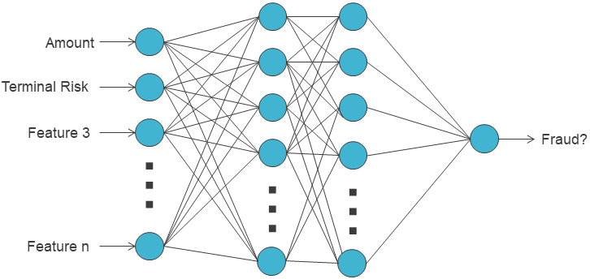
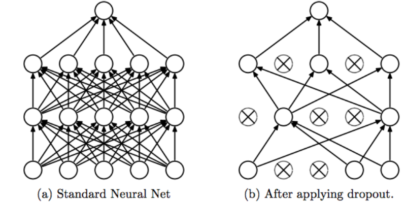
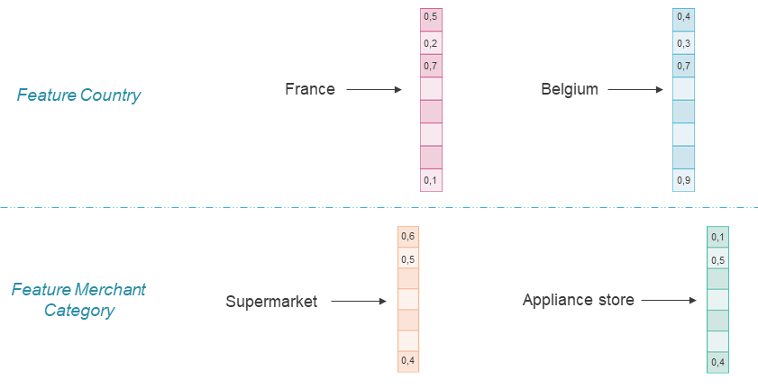

2. Feed-forward neural network¶
As neural networks are a pillar in both the early and the recent advances of artificial intelligence, their use for credit card fraud detection is not surprising. The first examples of simple feed-forward neural networks applied to fraud detection can bring us back to the early 90s [AFR97, GR94]. Naturally, in recent FDS studies, neural networks are often found in experimental benchmarks, along with random forests, XGBoost, or logistic regression.
At the core of a feed-forward neural network is the artificial neuron, a simple machine learning model that consists of a linear combination of input variables followed by the application of an activation function (sigmoid, ReLU, tanh, …).
A whole network is composed of a succession of layers containing neurons that take, as inputs, the output values of the previous layer.

When applied to the fraud detection problem, the architecture is designed as follows:
At the beginning of the network, the neurons take as input the characteristics of a credit card transaction, i.e. the features that were defined in the previous chapters.
At the end, the network outputs a single neuron that aims at representing the probability for the input transaction to be a fraud.
The rest of the architecture (other layers), the neurons specificity (activation functions), and other hyperparameters (optimization, data processing, …) are left to the practitioner’s choice.
The most popular training algorithm for feedforward architectures is backpropagation [HN92]. The idea is to iterate over all samples of the dataset and perform two key operations:
the forward pass: setting the sample’s features values in the input neurons and computing all the layers to finally obtain a predicted output.
the backward pass: computing a cost function, i.e. a discrepancy between the prediction and the expected ground truth output, and trying to minimize it with an optimizer (e.g. gradient descent) by updating weights layer after layer, from output to input.
This section covers the design of a feed-foward neural network for fraud detection. It describes how to:
Implement a first simple neural network and study the impact of several architectures and design choices.
Wrap it to make it compatible with the model selection methodology from Chapter 5 and run a grid-search to select its optimal parameters.
Store the important functions for a final comparison between deep learning techniques and other baselines at the end of the chapter.
Let us first start by importing all the necessary libraries and functions and retrieving the simulated data.
# Initialization: Load shared functions and simulated data
# Load shared functions
!curl -O https://raw.githubusercontent.com/Fraud-Detection-Handbook/fraud-detection-handbook/main/Chapter_References/shared_functions.py
%run shared_functions.py
# Get simulated data from Github repository
if not os.path.exists("simulated-data-transformed"):
!git clone https://github.com/Fraud-Detection-Handbook/simulated-data-transformed
% Total % Received % Xferd Average Speed Time Time Time Current
Dload Upload Total Spent Left Speed
100 63257 100 63257 0 0 225k 0 --:--:-- --:--:-- --:--:-- 227k
2.1. Data Loading¶
The experimental setup is the same as in Chapter 5. More precisely, at the end of the chapter, model selection will be based on a grid search with multiple validations. Each time, one week of data will be used for training a neural network and one week of data for testing the predictions.
To implement the first base network and explore several architecture choices, let us start by selecting a training and validation period arbitrarily. The experiments will be based on the transformed simulated data (simulated-data-transformed/data/) and the same feature set as other models.
DIR_INPUT='simulated-data-transformed/data/'
BEGIN_DATE = "2018-06-11"
END_DATE = "2018-09-14"
print("Load files")
%time transactions_df=read_from_files(DIR_INPUT, BEGIN_DATE, END_DATE)
print("{0} transactions loaded, containing {1} fraudulent transactions".format(len(transactions_df),transactions_df.TX_FRAUD.sum()))
output_feature="TX_FRAUD"
input_features=['TX_AMOUNT','TX_DURING_WEEKEND', 'TX_DURING_NIGHT', 'CUSTOMER_ID_NB_TX_1DAY_WINDOW',
'CUSTOMER_ID_AVG_AMOUNT_1DAY_WINDOW', 'CUSTOMER_ID_NB_TX_7DAY_WINDOW',
'CUSTOMER_ID_AVG_AMOUNT_7DAY_WINDOW', 'CUSTOMER_ID_NB_TX_30DAY_WINDOW',
'CUSTOMER_ID_AVG_AMOUNT_30DAY_WINDOW', 'TERMINAL_ID_NB_TX_1DAY_WINDOW',
'TERMINAL_ID_RISK_1DAY_WINDOW', 'TERMINAL_ID_NB_TX_7DAY_WINDOW',
'TERMINAL_ID_RISK_7DAY_WINDOW', 'TERMINAL_ID_NB_TX_30DAY_WINDOW',
'TERMINAL_ID_RISK_30DAY_WINDOW']
Load files
CPU times: user 321 ms, sys: 245 ms, total: 566 ms
Wall time: 588 ms
919767 transactions loaded, containing 8195 fraudulent transactions
# Setting the starting day for the training period, and the deltas
start_date_training = datetime.datetime.strptime("2018-07-25", "%Y-%m-%d")
delta_train=7
delta_delay=7
delta_test=7
(train_df, test_df)=get_train_test_set(transactions_df,start_date_training,
delta_train=delta_train,delta_delay=delta_delay,delta_test=delta_test)
# By default, scaling the input data
(train_df, test_df)=scaleData(train_df,test_df,input_features)
2.2. Overview of the neural network pipeline¶
The first step here is to implement a base neural network. There are several Python libraries that we can use (TensorFlow, PyTorch, Keras, MXNet, …). In this book, the PyTorch library [PGC+17] is used, but the models and benchmarks that will be developed could also be implemented with other libraries.
import torch
If torch and cuda libraries are installed properly, the models developed in this chapter can be trained on the GPU. For that, let us create a “DEVICE” variable and set it to “cuda” if a cuda device is available and “cpu” otherwise. In the rest of the chapter, all the models and tensors will be sent to this device for computations.
if torch.cuda.is_available():
DEVICE = "cuda"
else:
DEVICE = "cpu"
print("Selected device is",DEVICE)
Selected device is cuda
To ensure reproducibility, a random seed will be fixed like in previous chapters. Additionally to setting the seed for NumPy and random, it is necessary to set it for torch:
SEED = 42
def seed_everything(seed):
random.seed(seed)
os.environ['PYTHONHASHSEED'] = str(seed)
np.random.seed(seed)
torch.manual_seed(seed)
torch.cuda.manual_seed(seed)
torch.backends.cudnn.deterministic = True
torch.backends.cudnn.benchmark = True
seed_everything(SEED)
The function seed_everything defined above will be run before each model initialization and training.
Before diving into the neural network implementation, let us summarize the main elements of a deep learning training/testing pipeline in Torch:
Datasets/Dataloaders: It is recommended to manipulate data with specific PyTorch classes. Dataset is the interface to access the data. Given a sample’s index, it provides a well-formed input-output for the model. Dataloader takes the Dataset as input and provides an iterator for the training loop. It also allows to create batches, shuffle data, and parallelize data preparation.
Model/Module: Any model in PyTorch is a torch.module. It has an init function in which it instantiates all the necessary submodules (layers) and initializes their weights. It also has a forward function that defines all the operations of the forward pass.
The optimizer: The optimizer is the object that implements the optimization algorithm. It is called after the loss is computed to calculate the necessary model updates. The most basic one is SGD, but there are many others like RMSProp, Adagrad, Adam, …
Training loop and evaluation: the training loop is the core of a model’s training. It consists in performing several iterations (epochs), getting all the training batches from the loader, performing the forward pass, computing the loss, and calling the optimizer. After each epoch, an evaluation can be performed to track the model’s evolution and possibly stop the process.
2.2.1. Data management¶
The first step is to convert our data into objects that PyTorch can use, like FloatTensors.
x_train = torch.FloatTensor(train_df[input_features].values)
x_test = torch.FloatTensor(test_df[input_features].values)
y_train = torch.FloatTensor(train_df[output_feature].values)
y_test = torch.FloatTensor(test_df[output_feature].values)
Next comes the definition of a custom Dataset. This dataset is initialized with x_train/x_test and y_train/y_test and returns the individual samples in the format required by our model, after sending them to the right device.
class FraudDataset(torch.utils.data.Dataset):
def __init__(self, x, y):
'Initialization'
self.x = x
self.y = y
def __len__(self):
'Returns the total number of samples'
return len(self.x)
def __getitem__(self, index):
'Generates one sample of data'
# Select sample index
if self.y is not None:
return self.x[index].to(DEVICE), self.y[index].to(DEVICE)
else:
return self.x[index].to(DEVICE)
Note: This first custom Dataset FraudDataset seems useless because its role is very limited (simply returning a row from x and y) and because the matrices x and y are already loaded in RAM. This example is provided for educational purposes. But the concept of Dataset has a high interest when sample preparation requires more preprocessing. For instance, it becomes very handy for sequence preparation when using recurrent models (like an LSTM). This will be covered more in-depth later in this chapter but for example, a Dataset for sequential models performs several operations before returning a sample: searching for the history of transactions of the same cardholder and appending it to the current transaction before returning the whole sequence. It avoids preparing all the sequences in advance, which would entail repeating several transactions’ features in memory and consuming more RAM than necessary. Datasets objects are also useful when dealing with large image datasets in order to load the images on the fly.
Now that FraudDataset is defined, one can choose the training/evaluation parameters and instantiate DataLoaders. For now, let us consider a batch size of 64: this means that at each optimization step, 64 samples will be requested to the Dataset, turned into a batch, and go through the forward pass in parallel. Then the aggregation (sum or average) of the gradient of their losses will be used for backpropagation.
For the training DataLoader, the shuffle option will be set to True so that the order of the data seen by the model will not be the same from one epoch to another. This is recommended and known to be beneficial in Neural Network training [Rud16].
train_loader_params = {'batch_size': 64,
'shuffle': True,
'num_workers': 0}
test_loader_params = {'batch_size': 64,
'num_workers': 0}
# Generators
training_set = FraudDataset(x_train, y_train)
testing_set = FraudDataset(x_test, y_test)
training_generator = torch.utils.data.DataLoader(training_set, **train_loader_params)
testing_generator = torch.utils.data.DataLoader(testing_set, **test_loader_params)
The num_workers parameter allows parallelizing batch preparation. It can be useful when the Dataset requires a lot of processing before returning a sample.
2.2.2. The module¶
After defining the data pipeline, the next step is to design the module. Let us start with a first rather simple feed-forward neural network.
As suggested in the introduction, the idea is to define several fully connected layers (torch.nn.Linear). A first layer fc1 which takes as input as many neurons as there are features in the input x. It can be followed by a hidden layer with a chosen number of neurons (hidden_size). Finally comes the output layer which has a single output neuron to fit the label (fraud or genuine, represented by 1 and 0).
In the past, the sigmoid activation function used to be the primary choice for all activation functions in all layers of a neural network. Today, the preferred choice is ReLU (or variants like eLU, leaky ReLU), at least for the intermediate neurons. It has empirically proven to be a better choice for optimization and speed []. For output neurons, the choice depends on the range or the expected distribution for the output value to be predicted.
Below are plotted the output of several activation functions with respect to their input value to show how they behave and how they are distributed:
%%capture
fig_activation, axs = plt.subplots(3, 2,figsize=(11, 13))
input_values = torch.arange(-5, 5, 0.05)
#linear activation
output_values = input_values
axs[0, 0].plot(input_values, output_values)
axs[0, 0].set_title('Linear')
axs[0, 0].set_ylim([-5.1,5.1])
#heavyside activation
output_values = input_values>0
axs[0, 1].plot(input_values, output_values)
axs[0, 1].set_title('Heavyside (perceptron)')
axs[0, 1].set_ylim([-0.1,1.1])
#sigmoid activation
activation = torch.nn.Sigmoid()
output_values = activation(input_values)
axs[1, 0].plot(input_values, output_values)
axs[1, 0].set_title('Sigmoid')
axs[1, 0].set_ylim([-1.1,1.1])
#tanh activation
activation = torch.nn.Tanh()
output_values = activation(input_values)
axs[1, 1].plot(input_values, output_values)
axs[1, 1].set_title('Tanh')
axs[1, 1].set_ylim([-1.1,1.1])
#relu activation
activation = torch.nn.ReLU()
output_values = activation(input_values)
axs[2, 0].plot(input_values, output_values)
axs[2, 0].set_title('ReLU')
axs[2, 0].set_ylim([-0.5,5.1])
#leaky relu activation
activation = torch.nn.LeakyReLU(negative_slope=0.05)
output_values = activation(input_values)
axs[2, 1].plot(input_values, output_values)
axs[2, 1].set_title('Leaky ReLU')
axs[2, 1].set_ylim([-0.5,5.1])
fig_activation
For our fraud detection neural network, the ReLU activation will be used for the hidden layer and a Sigmoid activation for the output layer. The first is the primary choice for intermediate layers in deep learning. The latter is the primary choice for the output neurons in binary classification problems because it outputs values between 0 and 1 that can be interpreted as probabilities.
To implement this, let us create a new class SimpleFraudMLP that will inherit from a torch module. Its layers (fc1, relu, fc2, sigmoid) are initialized in the __init__ function and will be used successively in the forward pass.
class SimpleFraudMLP(torch.nn.Module):
def __init__(self, input_size, hidden_size):
super(SimpleFraudMLP, self).__init__()
# parameters
self.input_size = input_size
self.hidden_size = hidden_size
#input to hidden
self.fc1 = torch.nn.Linear(self.input_size, self.hidden_size)
self.relu = torch.nn.ReLU()
#hidden to output
self.fc2 = torch.nn.Linear(self.hidden_size, 1)
self.sigmoid = torch.nn.Sigmoid()
def forward(self, x):
hidden = self.fc1(x)
relu = self.relu(hidden)
output = self.fc2(relu)
output = self.sigmoid(output)
return output
Once defined, instantiating the model with 1000 neurons in its hidden layer and sending it to the device can be done as follows:
model = SimpleFraudMLP(len(input_features), 1000).to(DEVICE)
2.2.3. Optimization and training¶
Optimization is at the core of neural network training. The above neural network is designed to output a single value between 0 and 1. The goal is that this value gets as close to 1 (resp. 0) as possible for an input describing a fraudulent (resp. genuine) transaction.
In practice, this goal is formulated with an optimization problem that aims at minimizing or maximizing some cost/loss function. The role of the loss function is precisely to measure the discrepancy between the predicted value and the expected value (0 or 1), also referred to as the ground truth. There are many loss functions (mean squared error, cross-entropy, KL-divergence, hinge loss, mean absolute error) available in PyTorch, and each serves a specific purpose. For binary classification problems, binary cross-entropy is the most relevant one. It is defined as follows:
\(BCE(y,p) = −(y*log(p)+(1−y)*log(1−p))\)
Where \(y\) is the ground truth (in \(\{0,1\}\)) and \(p\) the predicted output (in \(]0,1[\)).
criterion = torch.nn.BCELoss().to(DEVICE)
Note: Pushing the criterion to the device is only required if this one stores/updates internal state variables or has parameters. It is unnecessary but not detrimental in the above case. We do it to show the most general implementation.
Before even training the model, one can already measure its initial loss on the testing set. For this, the model has to be put in eval mode:
model.eval()
SimpleFraudMLP(
(fc1): Linear(in_features=15, out_features=1000, bias=True)
(relu): ReLU()
(fc2): Linear(in_features=1000, out_features=1, bias=True)
(sigmoid): Sigmoid()
)
Then, the process consists in iterating over the testing generator, making predictions, and evaluating the chosen criterion (here torch.nn.BCELoss)
def evaluate_model(model,generator,criterion):
model.eval()
batch_losses = []
for x_batch, y_batch in generator:
# Forward pass
y_pred = model(x_batch)
# Compute Loss
loss = criterion(y_pred.squeeze(), y_batch)
batch_losses.append(loss.item())
mean_loss = np.mean(batch_losses)
return mean_loss
evaluate_model(model,testing_generator,criterion)
0.6754083250670742
Recall that the optimization problem is defined as follows: minimize the total/average binary cross-entropy of the model over all samples from the training dataset. Therefore, training the model consists in applying an optimization algorithm (backpropagation) to numerically solve the optimization problem.
The optimization algorithm or optimizer can be the standard stochastic gradient descent with a constant learning rate (torch.optim.SGD) or with an adaptive learning rate (torch.optim.Adagrad, torch.optim.Adam, etc…). Several optimization hyperparameters (learning rate, momentum, batch size, …) can be tuned. Note that choosing the right optimizer and hyperparameters will impact convergence speed and the quality of the reached optimum. Below is an illustration showing how fast different optimizers can reach the optimum (represented with a star) of a two dimensional optimization problem over the training process.

Source: https://cs231n.github.io/neural-networks-3/
Here, let us start with the arbitrary choice SGD, with a learning rate of 0.07.
optimizer = torch.optim.SGD(model.parameters(), lr = 0.07)
And let us implement the training loop for our neural network. First, the model has to be set in training mode. Then several iterations can be performed over the training generator (each iteration is called an epoch). During each iteration, a succession of training batches are provided by the generator and a forward pass is performed to get the model’s predictions. Then the criterion is computed between predictions and ground truth, and finally, the backward pass is carried out to update the model with the optimizer.
Let us start by setting the number of epochs to 150 arbitrarily.
n_epochs = 150
#Setting the model in training mode
model.train()
#Training loop
start_time=time.time()
epochs_train_losses = []
epochs_test_losses = []
for epoch in range(n_epochs):
model.train()
train_loss=[]
for x_batch, y_batch in training_generator:
# Applying the updates associated to previously computed gradients
optimizer.zero_grad()
# Performing the forward pass on the current batch
y_pred = model(x_batch)
# Computing the loss given the current predictions
loss = criterion(y_pred.squeeze(), y_batch)
# Computing the gradients over the backward pass
loss.backward()
# Indicating to the optimizer that a step has been performed
optimizer.step()
# Storing the current step's loss for display purposes
train_loss.append(loss.item())
#showing last training loss after each epoch
epochs_train_losses.append(np.mean(train_loss))
print('Epoch {}: train loss: {}'.format(epoch, np.mean(train_loss)))
#evaluating the model on the test set after each epoch
val_loss = evaluate_model(model,testing_generator,criterion)
epochs_test_losses.append(val_loss)
print('test loss: {}'.format(val_loss))
print("")
training_execution_time=time.time()-start_time
Epoch 0: train loss: 0.035290839925911685
test loss: 0.02218067791398807
Epoch 1: train loss: 0.026134893728365197
test loss: 0.021469182402057047
Epoch 2: train loss: 0.0246561407407331
test loss: 0.020574169931166553
Epoch 3: train loss: 0.02423229484444929
test loss: 0.02107386154216703
Epoch 4: train loss: 0.023609313174003787
test loss: 0.0210356019355784
Epoch 5: train loss: 0.022873578722177552
test loss: 0.019786655369601145
Epoch 6: train loss: 0.022470950096939557
test loss: 0.019926515792759236
Epoch 7: train loss: 0.02219278062594085
test loss: 0.028550955727806318
Epoch 8: train loss: 0.022042355658335844
test loss: 0.02049338448594368
Epoch 9: train loss: 0.021793536896477114
test loss: 0.019674824729140616
Epoch 10: train loss: 0.021385407493539246
test loss: 0.01945593247867908
Epoch 11: train loss: 0.021190979423734237
test loss: 0.019786519943567813
Epoch 12: train loss: 0.020975370036498363
test loss: 0.019642970249983027
Epoch 13: train loss: 0.02076734111756866
test loss: 0.02052513674605928
Epoch 14: train loss: 0.020718587878236387
test loss: 0.01951982097012225
Epoch 15: train loss: 0.02052261461601278
test loss: 0.02042003110112238
Epoch 16: train loss: 0.020464933605720204
test loss: 0.01951952900969588
Epoch 17: train loss: 0.02031139105385157
test loss: 0.019883068325074693
Epoch 18: train loss: 0.02005033891893512
test loss: 0.021136936702628534
Epoch 19: train loss: 0.02018909637513194
test loss: 0.019560931436896415
Epoch 20: train loss: 0.019688749160297697
test loss: 0.019475146327190752
Epoch 21: train loss: 0.019545665294593013
test loss: 0.01990481851439469
Epoch 22: train loss: 0.01966426501701454
test loss: 0.019774360520063372
Epoch 23: train loss: 0.019467116548984597
test loss: 0.01942398223827126
Epoch 24: train loss: 0.019450417307287908
test loss: 0.02036607543897992
Epoch 25: train loss: 0.019348452326161104
test loss: 0.01966385325294501
Epoch 26: train loss: 0.019337252642960243
test loss: 0.01941954461092479
Epoch 27: train loss: 0.018811270653081438
test loss: 0.02393198154940046
Epoch 28: train loss: 0.01910782355698203
test loss: 0.01893333827312034
Epoch 29: train loss: 0.01889679451607306
test loss: 0.0191712700046878
Epoch 30: train loss: 0.018880406176723666
test loss: 0.019288057992725535
Epoch 31: train loss: 0.018777794314975487
test loss: 0.019147953246904152
Epoch 32: train loss: 0.018520837131095473
test loss: 0.02091556165090575
Epoch 33: train loss: 0.018716360642273444
test loss: 0.0200009971591782
Epoch 34: train loss: 0.018424111695009345
test loss: 0.019739989193721698
Epoch 35: train loss: 0.01847832238549308
test loss: 0.018952790981592586
Epoch 36: train loss: 0.01833176362245378
test loss: 0.020047389050911392
Epoch 37: train loss: 0.01840733835025275
test loss: 0.019157873926489766
Epoch 38: train loss: 0.018216611167059752
test loss: 0.01925634399612826
Epoch 39: train loss: 0.018247971196790058
test loss: 0.019123039215892087
Epoch 40: train loss: 0.01818877947228747
test loss: 0.018829473494242827
Epoch 41: train loss: 0.01801579236064007
test loss: 0.02009236856039642
Epoch 42: train loss: 0.01776886585207973
test loss: 0.021591765647557278
Epoch 43: train loss: 0.017698623019236925
test loss: 0.019427421221762085
Epoch 44: train loss: 0.017801190636184537
test loss: 0.020934971890116567
Epoch 45: train loss: 0.01757617438695864
test loss: 0.020313221684501902
Epoch 46: train loss: 0.017528431712814582
test loss: 0.019237118583715917
Epoch 47: train loss: 0.01771650113830862
test loss: 0.019054257457372534
Epoch 48: train loss: 0.017471631084365873
test loss: 0.018768446161779733
Epoch 49: train loss: 0.01762986665642107
test loss: 0.01871213165666953
Epoch 50: train loss: 0.017376677225189697
test loss: 0.018944991090944246
Epoch 51: train loss: 0.01731134802643582
test loss: 0.019197071075790106
Epoch 52: train loss: 0.017309057082782377
test loss: 0.018737028158102676
Epoch 53: train loss: 0.017282733941613764
test loss: 0.019252458449021702
Epoch 54: train loss: 0.017132009704110808
test loss: 0.018666087535711397
Epoch 55: train loss: 0.017102760767770647
test loss: 0.019643470577414647
Epoch 56: train loss: 0.017175561865192656
test loss: 0.02059196266723934
Epoch 57: train loss: 0.01697120425308196
test loss: 0.019769266178551858
Epoch 58: train loss: 0.017009864932326663
test loss: 0.020981014218425704
Epoch 59: train loss: 0.01673883281791712
test loss: 0.019321667669907328
Epoch 60: train loss: 0.01682613142252103
test loss: 0.019117679840779805
Epoch 61: train loss: 0.01683426277134231
test loss: 0.019079260448347592
Epoch 62: train loss: 0.01672560934473155
test loss: 0.019345737459433483
Epoch 63: train loss: 0.016557869988561853
test loss: 0.01874406040829129
Epoch 64: train loss: 0.01658480815486637
test loss: 0.018706792446582257
Epoch 65: train loss: 0.016553207060462174
test loss: 0.01922788784218672
Epoch 66: train loss: 0.01656300151070667
test loss: 0.019106791167186204
Epoch 67: train loss: 0.01634960973555121
test loss: 0.01892106298902394
Epoch 68: train loss: 0.01637238433257146
test loss: 0.01970208241961054
Epoch 69: train loss: 0.016304624745100346
test loss: 0.020026253195723334
Epoch 70: train loss: 0.016170715611227758
test loss: 0.01916889895606555
Epoch 71: train loss: 0.01625427650099445
test loss: 0.02002084003181251
Epoch 72: train loss: 0.016230222106588692
test loss: 0.01973510921013191
Epoch 73: train loss: 0.016057555596756222
test loss: 0.019140344628865876
Epoch 74: train loss: 0.016185298318253365
test loss: 0.019592884734356532
Epoch 75: train loss: 0.016135186496054263
test loss: 0.01912933145930866
Epoch 76: train loss: 0.015831470446746182
test loss: 0.01980635219605146
Epoch 77: train loss: 0.016163742120889904
test loss: 0.018802218763737884
Epoch 78: train loss: 0.015780061666036713
test loss: 0.01946689938368842
Epoch 79: train loss: 0.015624963660032394
test loss: 0.019016587150318426
Epoch 80: train loss: 0.015677704382997953
test loss: 0.019123383783840122
Epoch 81: train loss: 0.0156669273015934
test loss: 0.019544906248615823
Epoch 82: train loss: 0.015945699108347162
test loss: 0.01896711020402914
Epoch 83: train loss: 0.015803545366061742
test loss: 0.01882257679583143
Epoch 84: train loss: 0.01554203405311698
test loss: 0.019160992536484494
Epoch 85: train loss: 0.015593627287424059
test loss: 0.02269861174688054
Epoch 86: train loss: 0.015608393082631792
test loss: 0.01906792499428118
Epoch 87: train loss: 0.015573860835403621
test loss: 0.018713722084268098
Epoch 88: train loss: 0.015303678795089192
test loss: 0.018859464580432892
Epoch 89: train loss: 0.015624303529220682
test loss: 0.019072787957337533
Epoch 90: train loss: 0.015395271594389798
test loss: 0.01925187274229275
Epoch 91: train loss: 0.015199235446182222
test loss: 0.019277529898914892
Epoch 92: train loss: 0.015254125732097324
test loss: 0.019276228871915446
Epoch 93: train loss: 0.015056131997448768
test loss: 0.01940738342764494
Epoch 94: train loss: 0.015149828447423323
test loss: 0.019223913595550125
Epoch 95: train loss: 0.015336624930633124
test loss: 0.018798039220534184
Epoch 96: train loss: 0.015293191029795655
test loss: 0.019010778412255576
Epoch 97: train loss: 0.015008694369883785
test loss: 0.019653212369427814
Epoch 98: train loss: 0.015102840106516498
test loss: 0.019357315392239054
Epoch 99: train loss: 0.015250559438101515
test loss: 0.018675536756820592
Epoch 100: train loss: 0.014856535338572485
test loss: 0.019066266391966104
Epoch 101: train loss: 0.014888768182264608
test loss: 0.019562842087552074
Epoch 102: train loss: 0.015026554204328614
test loss: 0.019209888092900036
Epoch 103: train loss: 0.01470694792277262
test loss: 0.019527851007887724
Epoch 104: train loss: 0.014760883615509944
test loss: 0.019603360463092235
Epoch 105: train loss: 0.014778099678375702
test loss: 0.01938396310747466
Epoch 106: train loss: 0.014656903555221966
test loss: 0.021055019364553493
Epoch 107: train loss: 0.014742576584012136
test loss: 0.019785542262680512
Epoch 108: train loss: 0.014616272993597133
test loss: 0.01918475812159322
Epoch 109: train loss: 0.014744729096057526
test loss: 0.019482410666562207
Epoch 110: train loss: 0.01478639586868968
test loss: 0.020755630938069685
Epoch 111: train loss: 0.014646960172508015
test loss: 0.019398048360927622
Epoch 112: train loss: 0.01472245290016775
test loss: 0.019159860661682446
Epoch 113: train loss: 0.014562352736468128
test loss: 0.019282711160597446
Epoch 114: train loss: 0.014577984230900334
test loss: 0.0193002821399542
Epoch 115: train loss: 0.014344233295217433
test loss: 0.020133854305154658
Epoch 116: train loss: 0.014341190461110107
test loss: 0.018970135359324077
Epoch 117: train loss: 0.014129704338756278
test loss: 0.01917728733261904
Epoch 118: train loss: 0.01430605129179519
test loss: 0.021149112656150264
Epoch 119: train loss: 0.014255904436282473
test loss: 0.018764410451399347
Epoch 120: train loss: 0.014217122137308613
test loss: 0.019560121930464764
Epoch 121: train loss: 0.014424033683536841
test loss: 0.019554240529785296
Epoch 122: train loss: 0.013943179655692972
test loss: 0.019388370742924505
Epoch 123: train loss: 0.014217297587438277
test loss: 0.019506819887417978
Epoch 124: train loss: 0.014320325663093509
test loss: 0.019013977995048798
Epoch 125: train loss: 0.014072354838150605
test loss: 0.019356480262935637
Epoch 126: train loss: 0.014174860061636348
test loss: 0.019924982428475582
Epoch 127: train loss: 0.014051309499243181
test loss: 0.01943692742414598
Epoch 128: train loss: 0.013706501579084047
test loss: 0.019356113880468657
Epoch 129: train loss: 0.013928943851151433
test loss: 0.023672922889693842
Epoch 130: train loss: 0.013996419837717392
test loss: 0.019937841926443746
Epoch 131: train loss: 0.01354328335033992
test loss: 0.018866847201061878
Epoch 132: train loss: 0.013858712335960314
test loss: 0.019526662786376717
Epoch 133: train loss: 0.013627326418468455
test loss: 0.019507627395780616
Epoch 134: train loss: 0.01363016927038159
test loss: 0.020167008346695766
Epoch 135: train loss: 0.014017050037538007
test loss: 0.019339477675381647
Epoch 136: train loss: 0.013699612338492446
test loss: 0.020203967244190785
Epoch 137: train loss: 0.01374569109071234
test loss: 0.020616953133759535
Epoch 138: train loss: 0.013681518706248508
test loss: 0.019543899178865818
Epoch 139: train loss: 0.013486423249944396
test loss: 0.020067024185707123
Epoch 140: train loss: 0.013582284482316487
test loss: 0.019309879371676077
Epoch 141: train loss: 0.013726865840729302
test loss: 0.019650126973995898
Epoch 142: train loss: 0.013600045634118164
test loss: 0.019795151278770167
Epoch 143: train loss: 0.013150996427657836
test loss: 0.02032829227653597
Epoch 144: train loss: 0.01349108792122783
test loss: 0.01965160865000445
Epoch 145: train loss: 0.013093949061199017
test loss: 0.020522381957106928
Epoch 146: train loss: 0.01322205882253866
test loss: 0.019739131280336053
Epoch 147: train loss: 0.013211467955250392
test loss: 0.019430110360044398
Epoch 148: train loss: 0.013549773727725752
test loss: 0.019252411015017387
Epoch 149: train loss: 0.01308232067314798
test loss: 0.019413354424067133
After training the model, a good practice is to analyze the training logs.
ma_window = 10
plt.plot(np.arange(len(epochs_train_losses)-ma_window + 1)+1, np.convolve(epochs_train_losses, np.ones(ma_window)/ma_window, mode='valid'))
plt.plot(np.arange(len(epochs_test_losses)-ma_window + 1)+1, np.convolve(epochs_test_losses, np.ones(ma_window)/ma_window, mode='valid'))
plt.xlabel('epoch')
plt.ylabel('loss')
plt.legend(['train','valid'])
#plt.ylim([0.01,0.06])
<matplotlib.legend.Legend at 0x7f9917c7a580>
print(training_execution_time)
851.1251120567322
One can note here how the training loss decreases epoch after epoch. This means that the optimization is going well: the chosen learning rate allows to update the model towards a better solution (lower loss) for the training dataset. However, neural networks are known to be very expressive models. In fact, the universal approximation theorem shows that, with enough neurons/layers, one can model any function with a neural network [Cyb89]. Therefore, it is expected for a complex neural network to be able to fit almost perfectly the training data. But the ultimate goal is to obtain a model that generalizes well on unseen data (like the validation set). Looking at the validation loss, one can see that it starts by decreasing (with oscillations) and it reaches an optimum around 0.019, and stops decreasing (or even starts increasing). This phenomenon is referred to as overfitting.
Many aspects can be improved in the training. Although one cannot measure the performance on the final test set while training, one can rely on a validation set and try to stop training before overfitting (see Model selection). One can also change the optimization algorithm and parameters to speed up training and reach a better optimum. This is investigated later, in the optimization paragraph.
For now, let us consider this final fitted model and evaluate it the same way as the other models in previous chapters. For this, let us create a prediction DataFrame and call the performance_assessment function from the shared functions.
start_time=time.time()
predictions_test = model(x_test.to(DEVICE))
prediction_execution_time = time.time()-start_time
predictions_train = model(x_train.to(DEVICE))
print("Predictions took", prediction_execution_time,"seconds.")
Predictions took 0.0022110939025878906 seconds.
predictions_df=test_df
predictions_df['predictions']=predictions_test.detach().cpu().numpy()
performance_assessment(predictions_df, top_k_list=[100])
| AUC ROC | Average precision | Card Precision@100 | |
|---|---|---|---|
| 0 | 0.864 | 0.653 | 0.286 |
This first shot feed-forward network already obtains a decent performance on the test set (refer to Chapter 3.4 for comparison). But several elements can be modified to improve the AUC ROC, reduce the training time, etc.
2.2.4. Optimization¶
As stated above, for the first model, optimization was not carried out properly because the validation performance is not exploited during the training process. To avoid overfitting in practice, it is necessary to take it into account (See Chapter 5, Hold-out validation).
delta_valid = delta_test
start_date_training_with_valid = start_date_training+datetime.timedelta(days=-(delta_delay+delta_valid))
(train_df, valid_df)=get_train_test_set(transactions_df,start_date_training_with_valid,
delta_train=delta_train,delta_delay=delta_delay,delta_test=delta_test)
# By default, scales input data
(train_df, valid_df)=scaleData(train_df, valid_df, input_features)
Let us implement an early stopping strategy. The idea is to detect overfitting, i.e. when validation error starts increasing, and stop the training process. Sometimes, the validation error might increase at a given epoch, but then decrease again. For that reason, it is important to also consider a patience parameter, i.e. a number of iterations for which the training process waits in order to make sure that the error is definitely increasing.
class EarlyStopping:
def __init__(self, patience=2, verbose=False):
self.patience = patience
self.verbose = verbose
self.counter = 0
self.best_score = np.Inf
def continue_training(self,current_score):
if self.best_score > current_score:
self.best_score = current_score
self.counter = 0
if self.verbose:
print("New best score:", current_score)
else:
self.counter+=1
if self.verbose:
print(self.counter, " iterations since best score.")
return self.counter <= self.patience
seed_everything(SEED)
model = SimpleFraudMLP(len(input_features), 1000).to(DEVICE)
def prepare_generators(train_df,valid_df,batch_size=64):
x_train = torch.FloatTensor(train_df[input_features].values)
x_valid = torch.FloatTensor(valid_df[input_features].values)
y_train = torch.FloatTensor(train_df[output_feature].values)
y_valid = torch.FloatTensor(valid_df[output_feature].values)
train_loader_params = {'batch_size': batch_size,
'shuffle': True,
'num_workers': 0}
valid_loader_params = {'batch_size': batch_size,
'num_workers': 0}
# Generators
training_set = FraudDataset(x_train, y_train)
valid_set = FraudDataset(x_valid, y_valid)
training_generator = torch.utils.data.DataLoader(training_set, **train_loader_params)
valid_generator = torch.utils.data.DataLoader(valid_set, **valid_loader_params)
return training_generator,valid_generator
training_generator,valid_generator = prepare_generators(train_df,valid_df,batch_size=64)
criterion = torch.nn.BCELoss().to(DEVICE)
optimizer = torch.optim.SGD(model.parameters(), lr = 0.0005)
The training loop can now be adapted to integrate early stopping:
def training_loop(model,training_generator,valid_generator,optimizer,criterion,max_epochs=100,apply_early_stopping=True,patience=2,verbose=False):
#Setting the model in training mode
model.train()
if apply_early_stopping:
early_stopping = EarlyStopping(verbose=verbose,patience=patience)
all_train_losses = []
all_valid_losses = []
#Training loop
start_time=time.time()
for epoch in range(max_epochs):
model.train()
train_loss=[]
for x_batch, y_batch in training_generator:
optimizer.zero_grad()
# Forward pass
y_pred = model(x_batch)
# Compute Loss
loss = criterion(y_pred.squeeze(), y_batch)
# Backward pass
loss.backward()
optimizer.step()
train_loss.append(loss.item())
#showing last training loss after each epoch
all_train_losses.append(np.mean(train_loss))
if verbose:
print('')
print('Epoch {}: train loss: {}'.format(epoch, np.mean(train_loss)))
#evaluating the model on the test set after each epoch
valid_loss = evaluate_model(model,valid_generator,criterion)
all_valid_losses.append(valid_loss)
if verbose:
print('valid loss: {}'.format(valid_loss))
if apply_early_stopping:
if not early_stopping.continue_training(valid_loss):
if verbose:
print("Early stopping")
break
training_execution_time=time.time()-start_time
return model,training_execution_time,all_train_losses,all_valid_losses
model,training_execution_time,train_losses,valid_losses = training_loop(model,training_generator,valid_generator,optimizer,criterion,max_epochs=500,verbose=True)
Epoch 0: train loss: 0.1913328490845047
valid loss: 0.09375773465535679
New best score: 0.09375773465535679
Epoch 1: train loss: 0.09739777461463589
valid loss: 0.06964004442421465
New best score: 0.06964004442421465
Epoch 2: train loss: 0.07702973348410874
valid loss: 0.05692868165753252
New best score: 0.05692868165753252
Epoch 3: train loss: 0.06568225591940303
valid loss: 0.05035814772171727
New best score: 0.05035814772171727
Epoch 4: train loss: 0.06026483534071345
valid loss: 0.04624887502299306
New best score: 0.04624887502299306
Epoch 5: train loss: 0.056940919349244286
valid loss: 0.04359364376449194
New best score: 0.04359364376449194
Epoch 6: train loss: 0.054429791377141476
valid loss: 0.04157831529816969
New best score: 0.04157831529816969
Epoch 7: train loss: 0.052457363431094424
valid loss: 0.04001519718599287
New best score: 0.04001519718599287
Epoch 8: train loss: 0.050785390330731414
valid loss: 0.03874376885531867
New best score: 0.03874376885531867
Epoch 9: train loss: 0.04932902906317955
valid loss: 0.03767143583403585
New best score: 0.03767143583403585
Epoch 10: train loss: 0.04800296786292874
valid loss: 0.036723700269568164
New best score: 0.036723700269568164
Epoch 11: train loss: 0.0467992290715557
valid loss: 0.03594793021129292
New best score: 0.03594793021129292
Epoch 12: train loss: 0.045708294409410904
valid loss: 0.03513609678204594
New best score: 0.03513609678204594
Epoch 13: train loss: 0.044724561932031955
valid loss: 0.034476374743170425
New best score: 0.034476374743170425
Epoch 14: train loss: 0.04376962262225367
valid loss: 0.03383087654867785
New best score: 0.03383087654867785
Epoch 15: train loss: 0.04289912999684194
valid loss: 0.03328745677008655
New best score: 0.03328745677008655
Epoch 16: train loss: 0.04211900097871801
valid loss: 0.03279653103523404
New best score: 0.03279653103523404
Epoch 17: train loss: 0.04133166673274472
valid loss: 0.03225325013668648
New best score: 0.03225325013668648
Epoch 18: train loss: 0.0406280806302369
valid loss: 0.03180343335687789
New best score: 0.03180343335687789
Epoch 19: train loss: 0.039973342111405435
valid loss: 0.03134397429113831
New best score: 0.03134397429113831
Epoch 20: train loss: 0.0393654040050253
valid loss: 0.03092465683960361
New best score: 0.03092465683960361
Epoch 21: train loss: 0.03881909422234527
valid loss: 0.03055180991577402
New best score: 0.03055180991577402
Epoch 22: train loss: 0.03827888194478721
valid loss: 0.030233140898960047
New best score: 0.030233140898960047
Epoch 23: train loss: 0.03780341152338593
valid loss: 0.029879456755954548
New best score: 0.029879456755954548
Epoch 24: train loss: 0.0373732605668579
valid loss: 0.029598503501810987
New best score: 0.029598503501810987
Epoch 25: train loss: 0.03695048963789958
valid loss: 0.02927447263802824
New best score: 0.02927447263802824
Epoch 26: train loss: 0.036615738789435213
valid loss: 0.02896905600607314
New best score: 0.02896905600607314
Epoch 27: train loss: 0.036207901082405854
valid loss: 0.02868095043018623
New best score: 0.02868095043018623
Epoch 28: train loss: 0.035899569037820905
valid loss: 0.02845362258688267
New best score: 0.02845362258688267
Epoch 29: train loss: 0.035585474596406916
valid loss: 0.0282213641676665
New best score: 0.0282213641676665
Epoch 30: train loss: 0.03530147399692787
valid loss: 0.028004939610881557
New best score: 0.028004939610881557
Epoch 31: train loss: 0.03506627075336731
valid loss: 0.027803662563343354
New best score: 0.027803662563343354
Epoch 32: train loss: 0.034790630911318426
valid loss: 0.02759764206499024
New best score: 0.02759764206499024
Epoch 33: train loss: 0.03455478501155346
valid loss: 0.027440349387178004
New best score: 0.027440349387178004
Epoch 34: train loss: 0.03433797730980566
valid loss: 0.027257424232656837
New best score: 0.027257424232656837
Epoch 35: train loss: 0.03413862231931868
valid loss: 0.027060411588029295
New best score: 0.027060411588029295
Epoch 36: train loss: 0.03393446611165715
valid loss: 0.026920503835433006
New best score: 0.026920503835433006
Epoch 37: train loss: 0.03374493613983389
valid loss: 0.026792875826969497
New best score: 0.026792875826969497
Epoch 38: train loss: 0.033567726451380044
valid loss: 0.026641243333353208
New best score: 0.026641243333353208
Epoch 39: train loss: 0.03341253091052288
valid loss: 0.026517281875706435
New best score: 0.026517281875706435
Epoch 40: train loss: 0.03323691976292283
valid loss: 0.026393191043613224
New best score: 0.026393191043613224
Epoch 41: train loss: 0.03309235302152657
valid loss: 0.026288463208885466
New best score: 0.026288463208885466
Epoch 42: train loss: 0.03293785912716622
valid loss: 0.026179640229709977
New best score: 0.026179640229709977
Epoch 43: train loss: 0.03279621294436061
valid loss: 0.02603624322212459
New best score: 0.02603624322212459
Epoch 44: train loss: 0.03266078568407357
valid loss: 0.025929251656730157
New best score: 0.025929251656730157
Epoch 45: train loss: 0.0325486152223623
valid loss: 0.025851620896592167
New best score: 0.025851620896592167
Epoch 46: train loss: 0.03240748641017048
valid loss: 0.025761372189907754
New best score: 0.025761372189907754
Epoch 47: train loss: 0.03228628662429095
valid loss: 0.02565560621245067
New best score: 0.02565560621245067
Epoch 48: train loss: 0.032172352504733076
valid loss: 0.02557775412731972
New best score: 0.02557775412731972
Epoch 49: train loss: 0.03205738163439212
valid loss: 0.02546982061209493
New best score: 0.02546982061209493
Epoch 50: train loss: 0.03195213218420801
valid loss: 0.025422557447451713
New best score: 0.025422557447451713
Epoch 51: train loss: 0.03188026639638223
valid loss: 0.025320453349948743
New best score: 0.025320453349948743
Epoch 52: train loss: 0.03174724143548703
valid loss: 0.025241477420563742
New best score: 0.025241477420563742
Epoch 53: train loss: 0.03165151671476192
valid loss: 0.025179216701313446
New best score: 0.025179216701313446
Epoch 54: train loss: 0.03155849563593604
valid loss: 0.025118731856956834
New best score: 0.025118731856956834
Epoch 55: train loss: 0.03148277452568137
valid loss: 0.025032085685130677
New best score: 0.025032085685130677
Epoch 56: train loss: 0.03140361373264691
valid loss: 0.02498556302880736
New best score: 0.02498556302880736
Epoch 57: train loss: 0.03129253131212813
valid loss: 0.024921924847844844
New best score: 0.024921924847844844
Epoch 58: train loss: 0.03121994449432056
valid loss: 0.024863514974407974
New best score: 0.024863514974407974
Epoch 59: train loss: 0.031125062090090083
valid loss: 0.024810835887560917
New best score: 0.024810835887560917
Epoch 60: train loss: 0.031047032346475305
valid loss: 0.02475847759859158
New best score: 0.02475847759859158
Epoch 61: train loss: 0.030969077953846187
valid loss: 0.024699673177216386
New best score: 0.024699673177216386
Epoch 62: train loss: 0.03090025394390129
valid loss: 0.024641404968121502
New best score: 0.024641404968121502
Epoch 63: train loss: 0.030862686669909847
valid loss: 0.024588247217604373
New best score: 0.024588247217604373
Epoch 64: train loss: 0.030749225534007208
valid loss: 0.02454875350568464
New best score: 0.02454875350568464
Epoch 65: train loss: 0.030681132341612193
valid loss: 0.02449575268454809
New best score: 0.02449575268454809
Epoch 66: train loss: 0.030624778894084305
valid loss: 0.02444306879655504
New best score: 0.02444306879655504
Epoch 67: train loss: 0.030545241735879167
valid loss: 0.02441780281487262
New best score: 0.02441780281487262
Epoch 68: train loss: 0.030487007927149534
valid loss: 0.024349838984835018
New best score: 0.024349838984835018
Epoch 69: train loss: 0.030432759078324597
valid loss: 0.0243099326176233
New best score: 0.0243099326176233
Epoch 70: train loss: 0.03041622593458457
valid loss: 0.024272297082540115
New best score: 0.024272297082540115
Epoch 71: train loss: 0.030300165977093958
valid loss: 0.024237286337127125
New best score: 0.024237286337127125
Epoch 72: train loss: 0.030241341069233863
valid loss: 0.02417136665301326
New best score: 0.02417136665301326
Epoch 73: train loss: 0.03018520880436229
valid loss: 0.024120652137700815
New best score: 0.024120652137700815
Epoch 74: train loss: 0.03013364729372674
valid loss: 0.024093669633345444
New best score: 0.024093669633345444
Epoch 75: train loss: 0.030071343618924114
valid loss: 0.024088013470121992
New best score: 0.024088013470121992
Epoch 76: train loss: 0.03001892710608532
valid loss: 0.024011776422002848
New best score: 0.024011776422002848
Epoch 77: train loss: 0.029969145755335175
valid loss: 0.023975220763333183
New best score: 0.023975220763333183
Epoch 78: train loss: 0.02991881920848341
valid loss: 0.02395541004638081
New best score: 0.02395541004638081
Epoch 79: train loss: 0.02986845553449282
valid loss: 0.02393013280867268
New best score: 0.02393013280867268
Epoch 80: train loss: 0.029822142165907468
valid loss: 0.023900585737629015
New best score: 0.023900585737629015
Epoch 81: train loss: 0.029775497005419024
valid loss: 0.023856908664402494
New best score: 0.023856908664402494
Epoch 82: train loss: 0.029724118022878526
valid loss: 0.023814442141307263
New best score: 0.023814442141307263
Epoch 83: train loss: 0.029677337395021937
valid loss: 0.023799496913542512
New best score: 0.023799496913542512
Epoch 84: train loss: 0.029632960171946263
valid loss: 0.023763575294701373
New best score: 0.023763575294701373
Epoch 85: train loss: 0.029605798028190453
valid loss: 0.023751684766049025
New best score: 0.023751684766049025
Epoch 86: train loss: 0.02954536723106544
valid loss: 0.023722586527853553
New best score: 0.023722586527853553
Epoch 87: train loss: 0.02950361069228614
valid loss: 0.02369303354774627
New best score: 0.02369303354774627
Epoch 88: train loss: 0.029461566101934185
valid loss: 0.023656040358565788
New best score: 0.023656040358565788
Epoch 89: train loss: 0.02946843091691408
valid loss: 0.023631087498983645
New best score: 0.023631087498983645
Epoch 90: train loss: 0.029390632712244846
valid loss: 0.023596429532454884
New best score: 0.023596429532454884
Epoch 91: train loss: 0.02936394038088406
valid loss: 0.02358429558254534
New best score: 0.02358429558254534
Epoch 92: train loss: 0.0292979597964771
valid loss: 0.023570768526740005
New best score: 0.023570768526740005
Epoch 93: train loss: 0.02927289446072393
valid loss: 0.02350624052634656
New best score: 0.02350624052634656
Epoch 94: train loss: 0.029223493826807074
valid loss: 0.023486437192542956
New best score: 0.023486437192542956
Epoch 95: train loss: 0.02918589157346159
valid loss: 0.023464245512277458
New best score: 0.023464245512277458
Epoch 96: train loss: 0.029144589333789668
valid loss: 0.023416468044081346
New best score: 0.023416468044081346
Epoch 97: train loss: 0.02912758567671418
valid loss: 0.023399247189912476
New best score: 0.023399247189912476
Epoch 98: train loss: 0.02907554728173104
valid loss: 0.023369539759880126
New best score: 0.023369539759880126
Epoch 99: train loss: 0.0290912055496365
valid loss: 0.0233648722342475
New best score: 0.0233648722342475
Epoch 100: train loss: 0.029008036460878815
valid loss: 0.023355054730915877
New best score: 0.023355054730915877
Epoch 101: train loss: 0.028976725650564847
valid loss: 0.02335138803861954
New best score: 0.02335138803861954
Epoch 102: train loss: 0.028942817495779684
valid loss: 0.023320194269667884
New best score: 0.023320194269667884
Epoch 103: train loss: 0.028908641032169415
valid loss: 0.02326713968322821
New best score: 0.02326713968322821
Epoch 104: train loss: 0.02887047877260101
valid loss: 0.023294708241143675
1 iterations since best score.
Epoch 105: train loss: 0.028846722699872738
valid loss: 0.023242005218797532
New best score: 0.023242005218797532
Epoch 106: train loss: 0.028813878833547763
valid loss: 0.023228671088244744
New best score: 0.023228671088244744
Epoch 107: train loss: 0.0287828464368198
valid loss: 0.023191343482247873
New best score: 0.023191343482247873
Epoch 108: train loss: 0.028756805844284437
valid loss: 0.02318918440959167
New best score: 0.02318918440959167
Epoch 109: train loss: 0.028723424002724072
valid loss: 0.023160055014075802
New best score: 0.023160055014075802
Epoch 110: train loss: 0.02869303663547042
valid loss: 0.023144750117675448
New best score: 0.023144750117675448
Epoch 111: train loss: 0.028664296415472405
valid loss: 0.023132199461475177
New best score: 0.023132199461475177
Epoch 112: train loss: 0.02863481912421807
valid loss: 0.02309743918585362
New best score: 0.02309743918585362
Epoch 113: train loss: 0.02860824634382469
valid loss: 0.023083067486123716
New best score: 0.023083067486123716
Epoch 114: train loss: 0.028580453087679016
valid loss: 0.023065064372393033
New best score: 0.023065064372393033
Epoch 115: train loss: 0.028583913627721683
valid loss: 0.023059428991403817
New best score: 0.023059428991403817
Epoch 116: train loss: 0.028539594658160757
valid loss: 0.023021483237605767
New best score: 0.023021483237605767
Epoch 117: train loss: 0.028498090858825875
valid loss: 0.0230103495645291
New best score: 0.0230103495645291
Epoch 118: train loss: 0.02847093119651941
valid loss: 0.022989906041623383
New best score: 0.022989906041623383
Epoch 119: train loss: 0.028445423570689504
valid loss: 0.02298577562040685
New best score: 0.02298577562040685
Epoch 120: train loss: 0.02843944391526859
valid loss: 0.02297029253553416
New best score: 0.02297029253553416
Epoch 121: train loss: 0.02839335314034668
valid loss: 0.022956622955821904
New best score: 0.022956622955821904
Epoch 122: train loss: 0.02836992497084908
valid loss: 0.02292723284062263
New best score: 0.02292723284062263
Epoch 123: train loss: 0.028345879081175456
valid loss: 0.02292975828311116
1 iterations since best score.
Epoch 124: train loss: 0.028317808104148332
valid loss: 0.022887073724932684
New best score: 0.022887073724932684
Epoch 125: train loss: 0.028294943689313463
valid loss: 0.02287090510369121
New best score: 0.02287090510369121
Epoch 126: train loss: 0.028270350065105462
valid loss: 0.02287252673808017
1 iterations since best score.
Epoch 127: train loss: 0.028275767688721375
valid loss: 0.022849381183492924
New best score: 0.022849381183492924
Epoch 128: train loss: 0.028224381290101953
valid loss: 0.022848820957085472
New best score: 0.022848820957085472
Epoch 129: train loss: 0.028200230417402737
valid loss: 0.022820619613064523
New best score: 0.022820619613064523
Epoch 130: train loss: 0.028176542286481532
valid loss: 0.02281207342764434
New best score: 0.02281207342764434
Epoch 131: train loss: 0.02815248865641326
valid loss: 0.02280835929693135
New best score: 0.02280835929693135
Epoch 132: train loss: 0.028131953311948742
valid loss: 0.022787688048607337
New best score: 0.022787688048607337
Epoch 133: train loss: 0.02810920693534987
valid loss: 0.022765636864713713
New best score: 0.022765636864713713
Epoch 134: train loss: 0.028111470830279543
valid loss: 0.022741809560627234
New best score: 0.022741809560627234
Epoch 135: train loss: 0.028099982538946102
valid loss: 0.022723406667266386
New best score: 0.022723406667266386
Epoch 136: train loss: 0.028045140870136296
valid loss: 0.022711630711901954
New best score: 0.022711630711901954
Epoch 137: train loss: 0.028020675978124725
valid loss: 0.02270077230469858
New best score: 0.02270077230469858
Epoch 138: train loss: 0.028001034442232085
valid loss: 0.022680820606374105
New best score: 0.022680820606374105
Epoch 139: train loss: 0.02798138180169781
valid loss: 0.022678537435239295
New best score: 0.022678537435239295
Epoch 140: train loss: 0.027956969244939848
valid loss: 0.022645182927938108
New best score: 0.022645182927938108
Epoch 141: train loss: 0.02793828301206516
valid loss: 0.02263188965267456
New best score: 0.02263188965267456
Epoch 142: train loss: 0.027918862506798887
valid loss: 0.022637629473602268
1 iterations since best score.
Epoch 143: train loss: 0.02789739242409415
valid loss: 0.022616112196838352
New best score: 0.022616112196838352
Epoch 144: train loss: 0.02788659036435529
valid loss: 0.022604331468827413
New best score: 0.022604331468827413
Epoch 145: train loss: 0.027857656635381423
valid loss: 0.02258195599510533
New best score: 0.02258195599510533
Epoch 146: train loss: 0.027839381755712527
valid loss: 0.022589396648974122
1 iterations since best score.
Epoch 147: train loss: 0.02781995714808606
valid loss: 0.022585400501062555
2 iterations since best score.
Epoch 148: train loss: 0.0278003837200537
valid loss: 0.022568948230772316
New best score: 0.022568948230772316
Epoch 149: train loss: 0.027782129139833536
valid loss: 0.02255174289432054
New best score: 0.02255174289432054
Epoch 150: train loss: 0.02776255571714337
valid loss: 0.02253183182914197
New best score: 0.02253183182914197
Epoch 151: train loss: 0.027743494876679993
valid loss: 0.022533289264745075
1 iterations since best score.
Epoch 152: train loss: 0.02775508448228696
valid loss: 0.02251671864193116
New best score: 0.02251671864193116
Epoch 153: train loss: 0.027706991043075363
valid loss: 0.02250744028123798
New best score: 0.02250744028123798
Epoch 154: train loss: 0.02771934628865929
valid loss: 0.022485052686581602
New best score: 0.022485052686581602
Epoch 155: train loss: 0.027669533327476514
valid loss: 0.02247313265154352
New best score: 0.02247313265154352
Epoch 156: train loss: 0.027651057377623228
valid loss: 0.022459305293827517
New best score: 0.022459305293827517
Epoch 157: train loss: 0.02763525061585351
valid loss: 0.02245297230032013
New best score: 0.02245297230032013
Epoch 158: train loss: 0.027679454755388827
valid loss: 0.02244625367056273
New best score: 0.02244625367056273
Epoch 159: train loss: 0.027604569671639947
valid loss: 0.022432177785600794
New best score: 0.022432177785600794
Epoch 160: train loss: 0.027581669508397622
valid loss: 0.022430453333199596
New best score: 0.022430453333199596
Epoch 161: train loss: 0.027564720215941876
valid loss: 0.02241775643925279
New best score: 0.02241775643925279
Epoch 162: train loss: 0.027579767085268138
valid loss: 0.02239429562255903
New best score: 0.02239429562255903
Epoch 163: train loss: 0.02753278665911463
valid loss: 0.02241013890763368
1 iterations since best score.
Epoch 164: train loss: 0.027514616644275278
valid loss: 0.02239029550762043
New best score: 0.02239029550762043
Epoch 165: train loss: 0.0274962666923052
valid loss: 0.022379505229716906
New best score: 0.022379505229716906
Epoch 166: train loss: 0.027480541330666047
valid loss: 0.022358953526823735
New best score: 0.022358953526823735
Epoch 167: train loss: 0.027462416702220806
valid loss: 0.02235966007164145
1 iterations since best score.
Epoch 168: train loss: 0.027444096298596284
valid loss: 0.022322355202129468
New best score: 0.022322355202129468
Epoch 169: train loss: 0.027431257501383442
valid loss: 0.022331677362974225
1 iterations since best score.
Epoch 170: train loss: 0.027412834448827143
valid loss: 0.02231330466558495
New best score: 0.02231330466558495
Epoch 171: train loss: 0.027397032502823177
valid loss: 0.022294207703820915
New best score: 0.022294207703820915
Epoch 172: train loss: 0.0274509967615949
valid loss: 0.022283703407089486
New best score: 0.022283703407089486
Epoch 173: train loss: 0.027366497663845153
valid loss: 0.022291729623920033
1 iterations since best score.
Epoch 174: train loss: 0.027348620703988788
valid loss: 0.02226596312760248
New best score: 0.02226596312760248
Epoch 175: train loss: 0.027336257964196344
valid loss: 0.022264154464810518
New best score: 0.022264154464810518
Epoch 176: train loss: 0.027319475778478267
valid loss: 0.02225901745997695
New best score: 0.02225901745997695
Epoch 177: train loss: 0.02730279668732003
valid loss: 0.02226781084309103
1 iterations since best score.
Epoch 178: train loss: 0.027288165774167896
valid loss: 0.022257838008894783
New best score: 0.022257838008894783
Epoch 179: train loss: 0.027274338977035656
valid loss: 0.022235579778251996
New best score: 0.022235579778251996
Epoch 180: train loss: 0.027257639051096277
valid loss: 0.0222349306349668
New best score: 0.0222349306349668
Epoch 181: train loss: 0.0272431151781598
valid loss: 0.0222269894069193
New best score: 0.0222269894069193
Epoch 182: train loss: 0.027227670632536036
valid loss: 0.02222529236466466
New best score: 0.02222529236466466
Epoch 183: train loss: 0.02721316859092257
valid loss: 0.022205822349174835
New best score: 0.022205822349174835
Epoch 184: train loss: 0.027198939605786985
valid loss: 0.02218940971887421
New best score: 0.02218940971887421
Epoch 185: train loss: 0.027183696735351138
valid loss: 0.02218479550713317
New best score: 0.02218479550713317
Epoch 186: train loss: 0.027172062066107647
valid loss: 0.022171826308715295
New best score: 0.022171826308715295
Epoch 187: train loss: 0.02715572778266422
valid loss: 0.022156602788024424
New best score: 0.022156602788024424
Epoch 188: train loss: 0.027142122838188527
valid loss: 0.022152840110977165
New best score: 0.022152840110977165
Epoch 189: train loss: 0.027156833799673426
valid loss: 0.022135975122543387
New best score: 0.022135975122543387
Epoch 190: train loss: 0.027116888003952688
valid loss: 0.022136385554111883
1 iterations since best score.
Epoch 191: train loss: 0.027097924722645283
valid loss: 0.022135188155222297
New best score: 0.022135188155222297
Epoch 192: train loss: 0.027096894630017274
valid loss: 0.022115503400920437
New best score: 0.022115503400920437
Epoch 193: train loss: 0.02707694551438257
valid loss: 0.02211413178821934
New best score: 0.02211413178821934
Epoch 194: train loss: 0.02705197550830953
valid loss: 0.02207818727029355
New best score: 0.02207818727029355
Epoch 195: train loss: 0.027042816159578955
valid loss: 0.02208785341767584
1 iterations since best score.
Epoch 196: train loss: 0.0270271035829242
valid loss: 0.022097130685973444
2 iterations since best score.
Epoch 197: train loss: 0.027014468928325357
valid loss: 0.02206936632054018
New best score: 0.02206936632054018
Epoch 198: train loss: 0.02700017227338944
valid loss: 0.02208895876067258
1 iterations since best score.
Epoch 199: train loss: 0.026988290910284974
valid loss: 0.022064897909129414
New best score: 0.022064897909129414
Epoch 200: train loss: 0.02697321216452931
valid loss: 0.022047681451006666
New best score: 0.022047681451006666
Epoch 201: train loss: 0.02698522687659921
valid loss: 0.022056757257182577
1 iterations since best score.
Epoch 202: train loss: 0.026946473529475098
valid loss: 0.022030715746143476
New best score: 0.022030715746143476
Epoch 203: train loss: 0.026932300859973207
valid loss: 0.022023860876870856
New best score: 0.022023860876870856
Epoch 204: train loss: 0.02693771722661527
valid loss: 0.022042856685043685
1 iterations since best score.
Epoch 205: train loss: 0.026908298703061904
valid loss: 0.022018495143793237
New best score: 0.022018495143793237
Epoch 206: train loss: 0.026924745706809295
valid loss: 0.022006724925986567
New best score: 0.022006724925986567
Epoch 207: train loss: 0.026879847991720097
valid loss: 0.022002845101027946
New best score: 0.022002845101027946
Epoch 208: train loss: 0.026870596271772188
valid loss: 0.021977116728120083
New best score: 0.021977116728120083
Epoch 209: train loss: 0.026854710156822767
valid loss: 0.02197441138439084
New best score: 0.02197441138439084
Epoch 210: train loss: 0.02684843184023091
valid loss: 0.02198466005012434
1 iterations since best score.
Epoch 211: train loss: 0.02682978686445658
valid loss: 0.021955960517484552
New best score: 0.021955960517484552
Epoch 212: train loss: 0.02681700668246957
valid loss: 0.02195046661609957
New best score: 0.02195046661609957
Epoch 213: train loss: 0.02680318067153029
valid loss: 0.02195493712044153
1 iterations since best score.
Epoch 214: train loss: 0.026792003410551376
valid loss: 0.02193685938156327
New best score: 0.02193685938156327
Epoch 215: train loss: 0.026778891367880524
valid loss: 0.021936603644710097
New best score: 0.021936603644710097
Epoch 216: train loss: 0.026765594678266724
valid loss: 0.02192195610555469
New best score: 0.02192195610555469
Epoch 217: train loss: 0.026753041088353153
valid loss: 0.0219172972147582
New best score: 0.0219172972147582
Epoch 218: train loss: 0.026740441359909
valid loss: 0.021891815369551787
New best score: 0.021891815369551787
Epoch 219: train loss: 0.02675781211188957
valid loss: 0.021882710980678923
New best score: 0.021882710980678923
Epoch 220: train loss: 0.02671727145791417
valid loss: 0.02188420647175097
1 iterations since best score.
Epoch 221: train loss: 0.026706334428299026
valid loss: 0.021876843120200468
New best score: 0.021876843120200468
Epoch 222: train loss: 0.02669213155113574
valid loss: 0.02187243546410133
New best score: 0.02187243546410133
Epoch 223: train loss: 0.026701319294075265
valid loss: 0.021869710195158185
New best score: 0.021869710195158185
Epoch 224: train loss: 0.026678147293265772
valid loss: 0.0218592405571129
New best score: 0.0218592405571129
Epoch 225: train loss: 0.026663049977819434
valid loss: 0.02185935075471147
1 iterations since best score.
Epoch 226: train loss: 0.026644339121434744
valid loss: 0.021852905498664886
New best score: 0.021852905498664886
Epoch 227: train loss: 0.026632149542421886
valid loss: 0.02184709989964514
New best score: 0.02184709989964514
Epoch 228: train loss: 0.02662308178784194
valid loss: 0.021839073700117853
New best score: 0.021839073700117853
Epoch 229: train loss: 0.0266067186489801
valid loss: 0.021813320899840262
New best score: 0.021813320899840262
Epoch 230: train loss: 0.026596664046614038
valid loss: 0.021812049154182032
New best score: 0.021812049154182032
Epoch 231: train loss: 0.026586715475234057
valid loss: 0.021813731203924436
1 iterations since best score.
Epoch 232: train loss: 0.026573514466994862
valid loss: 0.021802416847906802
New best score: 0.021802416847906802
Epoch 233: train loss: 0.026591666917143885
valid loss: 0.021827242320881842
1 iterations since best score.
Epoch 234: train loss: 0.026551182184370154
valid loss: 0.021798279944328907
New best score: 0.021798279944328907
Epoch 235: train loss: 0.02653926370147238
valid loss: 0.021774038161492086
New best score: 0.021774038161492086
Epoch 236: train loss: 0.026527666771271573
valid loss: 0.02177286891042779
New best score: 0.02177286891042779
Epoch 237: train loss: 0.026515682890564274
valid loss: 0.021766722955756254
New best score: 0.021766722955756254
Epoch 238: train loss: 0.02650503105578328
valid loss: 0.021760672808986137
New best score: 0.021760672808986137
Epoch 239: train loss: 0.02649356088161212
valid loss: 0.021760542575229223
New best score: 0.021760542575229223
Epoch 240: train loss: 0.02648173972860114
valid loss: 0.021756782706653894
New best score: 0.021756782706653894
Epoch 241: train loss: 0.026470260627845563
valid loss: 0.021743538932457486
New best score: 0.021743538932457486
Epoch 242: train loss: 0.02646023950367689
valid loss: 0.02173636605291337
New best score: 0.02173636605291337
Epoch 243: train loss: 0.026447690709718426
valid loss: 0.021723229918740893
New best score: 0.021723229918740893
Epoch 244: train loss: 0.026436533651583567
valid loss: 0.02171516716556593
New best score: 0.02171516716556593
Epoch 245: train loss: 0.026427496995030764
valid loss: 0.0217038648508367
New best score: 0.0217038648508367
Epoch 246: train loss: 0.026415772832677223
valid loss: 0.021700024869944393
New best score: 0.021700024869944393
Epoch 247: train loss: 0.026404477558615146
valid loss: 0.021701464606347223
1 iterations since best score.
Epoch 248: train loss: 0.0263892589270513
valid loss: 0.021680465038061713
New best score: 0.021680465038061713
Epoch 249: train loss: 0.02640936977428564
valid loss: 0.021685087677254213
1 iterations since best score.
Epoch 250: train loss: 0.026396438337187595
valid loss: 0.021688318406257148
2 iterations since best score.
Epoch 251: train loss: 0.026359157091190053
valid loss: 0.0216866343788538
3 iterations since best score.
Early stopping
After 251 epochs, the model stops learning because the validation performance has not improved for three iterations. Here the optimal model (from epoch 248) is not saved, but this could be implemented by simply adding torch.save(model.state_dict(), checkpoint_path) in the EarlyStopping class whenever a new best performance is reached. This allows reloading the saved best checkpoint at the end of the training.
Now that a clean optimization process is defined, one can consider several solutions to speed up and improve convergence towards a decent extremum. The most natural way to do so is to play with the optimizer hyperparameters like the learning rate and the batch size. With a large learning rate, gradient descent is fast at the beginning, but then the optimizer struggles to find the minimum. Adaptive learning rate techniques like Adam/RMSProp take into account the steepness by normalizing the learning rate with respect to the gradient norm. Below are the formulas to update on a model parameter \(w_t\) with Adam.
\(w_{t+1} = w_t - \frac{\eta}{\sqrt{\hat{v_t}+\epsilon}}*\hat{m_t}\)
Where:
\(m_t = \beta_1 * m_{t-1} + (1-\beta_1)*\nabla w_t\)
\(v_t = \beta_2 * v_{t-1} + (1-\beta_2)*(\nabla w_t)^2\)
\(\hat{m_t}=\frac{m_t}{1-\beta_1^t}\)
\(\hat{v_t}=\frac{v_t}{1-\beta_2^t}\)
The difference with SGD is that here the learning rate is normalized using the “gradient norm” (\(\approx \hat{m_t}\)). To be more precise, the approach does not use the “raw” gradient \(\nabla w_t\) and gradient norm \(\nabla w_t^2\) but a momentum instead (convex combination between previous values and the current value), respectively \(m_t\) and \(v_t\). It also applies a decay over the iterations.
Let us try Adam with an initial learning rate of 0.0005 to see the difference with regular SGD.
seed_everything(SEED)
model = SimpleFraudMLP(len(input_features), 1000).to(DEVICE)
optimizer = torch.optim.Adam(model.parameters(), lr = 0.0005)
model,training_execution_time,train_losses_adam,valid_losses_adam = training_loop(model,training_generator,valid_generator,optimizer,criterion,verbose=True)
Epoch 0: train loss: 0.04573855715283828
valid loss: 0.022921395302963915
New best score: 0.022921395302963915
Epoch 1: train loss: 0.026701830054725026
valid loss: 0.02114229145894957
New best score: 0.02114229145894957
Epoch 2: train loss: 0.024963660846240854
valid loss: 0.020324631678856543
New best score: 0.020324631678856543
Epoch 3: train loss: 0.023575769497520587
valid loss: 0.020667109151543857
1 iterations since best score.
Epoch 4: train loss: 0.022709976203506368
valid loss: 0.019151893639657136
New best score: 0.019151893639657136
Epoch 5: train loss: 0.02221683326257877
valid loss: 0.01883163772557755
New best score: 0.01883163772557755
Epoch 6: train loss: 0.021621740234552315
valid loss: 0.020071852290392166
1 iterations since best score.
Epoch 7: train loss: 0.021379320485157675
valid loss: 0.01888933465421668
2 iterations since best score.
Epoch 8: train loss: 0.020929416735303973
valid loss: 0.018099226153906068
New best score: 0.018099226153906068
Epoch 9: train loss: 0.0205484975132037
valid loss: 0.018046115800392268
New best score: 0.018046115800392268
Epoch 10: train loss: 0.020301625159160407
valid loss: 0.01875325692474048
1 iterations since best score.
Epoch 11: train loss: 0.020031702731716863
valid loss: 0.019088358170215466
2 iterations since best score.
Epoch 12: train loss: 0.019720997269925114
valid loss: 0.018150363140039736
3 iterations since best score.
Early stopping
plt.subplot(1, 2, 1)
plt.plot(np.arange(len(train_losses))+1, train_losses)
plt.plot(np.arange(len(valid_losses))+1, valid_losses)
plt.title("SGD")
plt.xlabel('epoch')
plt.ylabel('loss')
plt.legend(['train','valid'])
plt.ylim([0.01,0.06])
plt.subplot(1, 2, 2)
plt.plot(np.arange(len(train_losses_adam))+1, train_losses_adam)
plt.plot(np.arange(len(valid_losses_adam))+1, valid_losses_adam)
plt.title("ADAM")
plt.xlabel('epoch')
plt.ylabel('loss')
plt.legend(['train','valid'])
plt.ylim([0.01,0.06])
(0.01, 0.06)
The optimization is much faster with Adam (10 times fewer epochs) and it reaches a better optimum. Of course, increasing patience or changing the learning rate with SGD would probably help improve both speed and optimum. Nevertheless, Adam will be retained for the rest of the chapter as it usually allows very decent performance without significant tuning. To build the final neural network later, the tuning will mostly be made using batch size and initial learning rate.
Here are only mentioned the optimizer’s choice and some hyperparameters tuning for the optimization process. But keep in mind that neural network optimization is a very wide and active area of research/engineering. For instance, with Deep Networks, one can apply batch normalization after each layer to standardize the distribution and speed up convergence. One can also reduce the learning rate when validation loss reaches a plateau (torch.optim.ReduceLROnPlateau). For a full guide on Deep Learning optimization, we recommend [LNC+11, Rud16].
2.3. Regularization¶
A classical way to improve generalization and reach a better validation performance is to regularize the model. Roughly speaking, regularization consists in limiting the model expressiveness in order to reduce overfitting.
The most common technique to regularize a machine learning model is to restrict its parameter space, for instance, its norm, by adding a term in the optimization problem. Additionally, to minimize the discrepancy between ground truth and prediction, integrating an L1 norm (resp. L2 norm) term in the loss will entail parameter sparsity (resp. will limit parameters amplitude). The initial solution space is generally full of equivalent solutions (e.g. with linear activations, dividing all input weights of a neuron by 2 and multiplying all of its output weights by 2 leads to an equivalent model), so the restrictions entailed by regularization not only limits overfitting but also reduces the search and can help with optimization. Finally, selecting a solution with minimal norm follows the principle of “All things being equal, the simplest solution tends to be the best one”, a scientific principle often referred to as the Occam’s razor.
In contrast to adding loss terms, there is a regularization technique specifically designed for Neural Networks called dropout. Dropout consists in randomly dropping some neurons from the network at each training step. More precisely, one fixes a dropout parameter p∈[0,1], and, for each mini-batch, for each neuron, performs a coin toss (Bernoulli) with probability p. If positive, one temporarily sets the neuron’s weights to zero (so that the dropped neuron is not considered during the forward and backward passes). It is equivalent to training a random sub-network at each mini-batch (Figure 5), and it can be proven that this has an L2-regularization effect on specific architectures [SHK+14].
 Image source: [SHK+14]
To implement it, let us define a new model with an additional torch.nn.Dropout layer.
class SimpleFraudMLPWithDropout(torch.nn.Module):
def __init__(self, input_size, hidden_size,p):
super(SimpleFraudMLPWithDropout, self).__init__()
# parameters
self.input_size = input_size
self.hidden_size = hidden_size
self.p = p
#input to hidden
self.fc1 = torch.nn.Linear(self.input_size, self.hidden_size)
self.relu = torch.nn.ReLU()
#hidden to output
self.fc2 = torch.nn.Linear(self.hidden_size, 1)
self.sigmoid = torch.nn.Sigmoid()
self.dropout = torch.nn.Dropout(self.p)
def forward(self, x):
hidden = self.fc1(x)
hidden = self.relu(hidden)
hidden = self.dropout(hidden)
output = self.fc2(hidden)
output = self.sigmoid(output)
return output
Note that setting the model in training/evaluation mode with the methods model.eval() and model.train() take all its significance here. In particular, the dropout layer in the forward pass is only applied when the model is in training mode.
seed_everything(SEED)
model = SimpleFraudMLPWithDropout(len(input_features), 1000,0.2).to(DEVICE)
optimizer = torch.optim.Adam(model.parameters(), lr = 0.0005)
model,training_execution_time,train_losses_dropout,valid_losses_dropout = training_loop(model,training_generator,valid_generator,optimizer,criterion,verbose=False)
plt.plot(np.arange(len(train_losses_adam))+1, train_losses_adam)
plt.plot(np.arange(len(valid_losses_adam))+1, valid_losses_adam)
plt.plot(np.arange(len(train_losses_dropout))+1, train_losses_dropout)
plt.plot(np.arange(len(valid_losses_dropout))+1, valid_losses_dropout)
plt.title("Dropout effect")
plt.xlabel('epoch')
plt.ylabel('loss')
plt.legend(['train w/o dropout','valid w/o dropout','train w/ dropout','valid w/ dropout'])
<matplotlib.legend.Legend at 0x7f996d2e3190>
It is generally reported that a small dropout value can lead to better generalization results than no dropout, but it can sometimes be the opposite if the training data are very rich, if the training distribution is close to the valid/test distribution, and if the model is already not too expressive. So, the best practice is to consider dropout as a hyperparameter (that could be set to 0) and tune it with a hyperparameter search.
In addition to the L2-regularization effect, dropout can be seen as a very powerful mechanism that mimics ensembling strategies like the one in a Random Forest (the model can be seen as an ensemble of submodels trained on different subsets of data).
2.4. Scaling the inputs¶
XGBoost and random forests learn splits on single features and therefore are robust to the scale and distribution of the values. On the contrary, in a neural network, each neuron of the first layer learns a linear combination of all the features. Therefore, it is easier to train the neurons when all features have the same range and are normally distributed. The first property can be easily implemented by applying min-max or standard scaling on the features. As for the second property, it depends on the original distribution of the features. Some of them are not normally distributed and have non-linear scales (e.g. amount): increasing the amount by 5 dollars should not have the same effect if the starting point is 5 dollars or if the starting point is 100 dollars. It turns out that applying the log function on such features can make their distribution slightly more normal which makes it easier for feed-forward neural networks to learn from them.
(train_df, valid_df)=get_train_test_set(transactions_df,start_date_training_with_valid,
delta_train=delta_train,delta_delay=delta_delay,delta_test=delta_test)
For instance here is how the original amounts look like:
_ = plt.hist(train_df['TX_AMOUNT'].values,bins=20)
And now let us apply the log function to it. To obtain a positive log for the feature that is in [0,+∞[, an idea is to add 1 and then apply the log function (which is equivalent to applying the log1p function in numpy). This leads to a preprocessed feature that belongs to [0,+∞[ and it can then be standardized. Here is how the amounts are distributed after all these steps:
_ = plt.hist(sklearn.preprocessing.StandardScaler().fit_transform(np.log1p(train_df['TX_AMOUNT'].values).reshape(-1, 1)),bins=20)
Note that here, our artificial data were generated with Gaussians so the np.log1p is not very useful in practice. But keep in mind that on real-world data, the original scale of features like amount is far from normally distributed and this operation turns out to be quite often useful.
Let us forget about the log for now and just analyze the impact of scaling the features on our Neural Network’s training. More precisely, let us see the difference between no scaling at all and standard scaling. A smaller learning rate of 0.0001 will be chosen here for the experiment without scaling to avoid divergence.
#we did not call the function scaleData this time
seed_everything(SEED)
training_generator,valid_generator = prepare_generators(train_df,valid_df,batch_size=64)
model = SimpleFraudMLPWithDropout(len(input_features), 1000,0.2).to(DEVICE)
optimizer = torch.optim.Adam(model.parameters(), lr = 0.0001)
model,training_execution_time,train_losses_without_scaling,valid_losses_without_scaling = training_loop(model,training_generator,valid_generator,optimizer,criterion,verbose=False)
plt.plot(np.arange(len(train_losses_without_scaling))+1, train_losses_without_scaling)
plt.plot(np.arange(len(valid_losses_without_scaling))+1, valid_losses_without_scaling)
plt.plot(np.arange(len(train_losses_dropout))+1, train_losses_dropout)
plt.plot(np.arange(len(valid_losses_dropout))+1, valid_losses_dropout)
plt.title('Scaling effect')
plt.xlabel('epoch')
plt.ylabel('loss')
plt.legend(['train w/o scaling','valid w/o scaling','train w/ scaling','valid w/ scaling'])
<matplotlib.legend.Legend at 0x7f9917b62c70>
The train/valid losses are smoother and reach much better levels faster when the data is normalized with standard scaling.
# Let us rescale data for the next parts
(train_df, valid_df)=scaleData(train_df, valid_df,input_features)
2.5. Embeddings¶
Properly taking into account categorical variables is maybe one of the main advantages of neural networks. In the first chapters, feature transformation techniques were applied to categorical features like day, Customer ID, Terminal ID, in order to make them binary or to extract numerical features from them.
In real-world data, categorical features are frequent (Country, Merchant Type, hour, type of payment, …). But most machine learning algorithms require features to be numerical. Take the example of linear regression: it is basically a weighted sum of the features’ values. For numerical features, it makes sense to consider that their impact is proportional to their value (e.g. the smaller the delay between two transactions, the higher the fraud risk), but it does not make sense for a nominal feature like a Country that can take the values “USA”, “France”, “Belgium”. For the latter, a transformation is necessary. The most common choices are:
One-hot encoding: a binary feature is defined for each modality (e.g. “country_is_USA”, “country_is_France” and “country_is_Belgium”).
Frequency-based encoding: The frequency (or another statistic) of each modality is computed and the index of the modality is replaced with the value of the statistic.
Label-correlation encoding: It is close to frequency encoding but here a statistic correlated with the label is computed. For instance, each modality can be replaced with its proportion of fraud in the training data.
With neural networks, one can make use of embedding layers to encode categorical variables. More precisely, the idea is to let the neural network itself learn a representation of each modality of the categorical variable in a continuous vector space of dimension k, chosen by the practitioner. These representations can be learned end-to-end to make the feed-forward network optimal for the fraud detection task. They can also be learned with a different objective like predicting the sequences of countries visited by cardholders (unsupervised pre-training) and then later used for fraud detection, either with a neural network classifier or any other classifier (XGBoost, random forest, etc.).

Note that learning an embedding of dimension \(k\) for a categorical feature is equivalent to passing the one-hot encoding of the feature alone into a dense layer with an output dimension \(k\).
To test embedding layers, let us try to add extra categorical inputs in \(x\) and let the model learn embedding for them. Our last neural network was trained on the following features:
input_features
['TX_AMOUNT',
'TX_DURING_WEEKEND',
'TX_DURING_NIGHT',
'CUSTOMER_ID_NB_TX_1DAY_WINDOW',
'CUSTOMER_ID_AVG_AMOUNT_1DAY_WINDOW',
'CUSTOMER_ID_NB_TX_7DAY_WINDOW',
'CUSTOMER_ID_AVG_AMOUNT_7DAY_WINDOW',
'CUSTOMER_ID_NB_TX_30DAY_WINDOW',
'CUSTOMER_ID_AVG_AMOUNT_30DAY_WINDOW',
'TERMINAL_ID_NB_TX_1DAY_WINDOW',
'TERMINAL_ID_RISK_1DAY_WINDOW',
'TERMINAL_ID_NB_TX_7DAY_WINDOW',
'TERMINAL_ID_RISK_7DAY_WINDOW',
'TERMINAL_ID_NB_TX_30DAY_WINDOW',
'TERMINAL_ID_RISK_30DAY_WINDOW']
Let us add, for example, the raw terminal id and the day of the week as categorical input features:
def weekday(tx_datetime):
# Transform date into weekday (0 is Monday, 6 is Sunday)
weekday = tx_datetime.weekday()
return int(weekday)
train_df['TX_WEEKDAY'] = train_df.TX_DATETIME.apply(weekday)
valid_df['TX_WEEKDAY'] = valid_df.TX_DATETIME.apply(weekday)
input_categorical_features = ['TX_WEEKDAY','TERMINAL_ID']
Let us now define a new neural network model with two embedding layers. TX_WEEKDAY and TERMINAL_ID will both go through one of them, and each will be turned into a vector. Then they will be concatenated with the numerical features and the whole will go through a network similar to our previous architecture.
class FraudMLPWithEmbedding(torch.nn.Module):
def __init__(self, categorical_inputs_modalities,numerical_inputs_size,embedding_sizes, hidden_size,p):
super(FraudMLPWithEmbedding, self).__init__()
# parameters
self.categorical_inputs_modalities = categorical_inputs_modalities
self.numerical_inputs_size = numerical_inputs_size
self.embedding_sizes = embedding_sizes
self.hidden_size = hidden_size
self.p = p
assert len(categorical_inputs_modalities)==len(embedding_sizes), 'categorical_inputs_modalities and embedding_sizes must have the same length'
#embedding layers
self.emb = []
for i in range(len(categorical_inputs_modalities)):
self.emb.append(torch.nn.Embedding(int(categorical_inputs_modalities[i]), int(embedding_sizes[i])).to(DEVICE))
#contenated inputs to hidden
self.fc1 = torch.nn.Linear(self.numerical_inputs_size+int(np.sum(embedding_sizes)), self.hidden_size)
self.relu = torch.nn.ReLU()
#hidden to output
self.fc2 = torch.nn.Linear(self.hidden_size, 1)
self.sigmoid = torch.nn.Sigmoid()
self.dropout = torch.nn.Dropout(self.p)
def forward(self, x):
#we assume that x start with numerical features then categorical features
inputs = [x[:,:self.numerical_inputs_size]]
for i in range(len(self.categorical_inputs_modalities)):
inputs.append(self.emb[i](x[:,self.numerical_inputs_size+i].to(torch.int64)))
x = torch.cat(inputs,axis=1)
hidden = self.fc1(x)
hidden = self.relu(hidden)
hidden = self.dropout(hidden)
output = self.fc2(hidden)
output = self.sigmoid(output)
return output
def prepare_generators_with_categorical_features(train_df,valid_df,input_categorical_features,batch_size=64):
x_train = torch.FloatTensor(train_df[input_features].values)
x_valid = torch.FloatTensor(valid_df[input_features].values)
y_train = torch.FloatTensor(train_df[output_feature].values)
y_valid = torch.FloatTensor(valid_df[output_feature].values)
#categorical variables : encoding valid according to train
encoder = sklearn.preprocessing.OrdinalEncoder(handle_unknown='use_encoded_value',unknown_value=-1)
x_train_cat = encoder.fit_transform(train_df[input_categorical_features].values) + 1
categorical_inputs_modalities = np.max(x_train_cat,axis=0)+1
x_train_cat = torch.IntTensor(x_train_cat)
x_valid_cat = torch.IntTensor(encoder.transform(valid_df[input_categorical_features].values) + 1)
x_train = torch.cat([x_train,x_train_cat],axis=1)
x_valid = torch.cat([x_valid,x_valid_cat],axis=1)
train_loader_params = {'batch_size': batch_size,
'shuffle': True,
'num_workers': 0}
valid_loader_params = {'batch_size': batch_size,
'num_workers': 0}
# Generators
training_set = FraudDataset(x_train, y_train)
valid_set = FraudDataset(x_valid, y_valid)
training_generator = torch.utils.data.DataLoader(training_set, **train_loader_params)
valid_generator = torch.utils.data.DataLoader(valid_set, **valid_loader_params)
return training_generator,valid_generator, categorical_inputs_modalities
Now let us train this new model with an embedding dimension of 10 for each categorical feature.
seed_everything(SEED)
training_generator,valid_generator,categorical_inputs_modalities = prepare_generators_with_categorical_features(train_df,valid_df,input_categorical_features,batch_size=64)
embedding_sizes = [10]*len(categorical_inputs_modalities)
model = FraudMLPWithEmbedding(categorical_inputs_modalities,len(input_features),embedding_sizes, 1000,0.2).to(DEVICE)
optimizer = torch.optim.Adam(model.parameters(), lr = 0.0001)
model,training_execution_time,train_losses_embedding,valid_losses_embedding = training_loop(model,training_generator,valid_generator,optimizer,criterion,verbose=False)
plt.plot(np.arange(len(train_losses_embedding))+1, train_losses_embedding)
plt.plot(np.arange(len(valid_losses_embedding))+1, valid_losses_embedding)
plt.plot(np.arange(len(train_losses_dropout))+1, train_losses_dropout)
plt.plot(np.arange(len(valid_losses_dropout))+1, valid_losses_dropout)
plt.title('Use of categorical features')
plt.xlabel('epoch')
plt.ylabel('loss')
plt.legend(['train w/ cat','valid w/ cat','train w/o cat','valid w/o cat'])
<matplotlib.legend.Legend at 0x7f9917ac37c0>
The performance here is not necessarily better with the categorical features (they do not add value compared to the engineered features, at least for the fraud patterns in our categorical data). This implementation is shown for educational purposes. Keep in mind that embedding layers are often a valuable solution in practice when training with a lot of data because it is a step forward in automation (instead of expert feature engineering, one can leave the representation choice to the model).
Embedding can also be interesting for interpretability. Indeed, at the end of training, one can extract model.emb[i].weight. Each row of this matrix represents the embedding vector of a given modality for the i-th categorical feature. This can be used to compute similarities between modalities. One can also reduce these vectors’ dimensionality with TSNE or PCA and visualize all modalities on a 2D plane.
2.6. Ensemble¶
To go further and improve the results, ensembling is a common strategy with neural networks in general and for fraud detection.
The idea is to simply train the architecture several times and average the predictions of all the obtained models at inference [Zho21]. Layer initialization and the random batch order are generally enough to ensure diversity between each submodel and make the ensemble better than each individual. To go further, one can also train each individual on a different train/valid split [Bre96].
Ensembling is also very useful for fraud detection, in particular, because of concept drift. Indeed, in fraud detection, the fraudsters’ techniques are varied and change over time. A single model can struggle to both learn and remember all the different patterns for the target class. In this context, it is expected that an ensemble of models, efficiently built, can cope with the issue. The intuition is that the different components of the ensemble can be specialized for different tasks. For example, a component could be specialized for the recent patterns and another for the old patterns [LPS+21]. Similarly, a component could be specialized for the easiest and generic fraudsters’ strategies and another for advanced concepts.
2.7. Prequential grid search¶
The above sections have shown many design choices for the neural network. Let us now follow the prequential methodology from Chapter 5 and perform a grid search to see the impact of some hyperparameters on the performance and be able to compare the results with other baselines from previous chapters.
Let us consider the following ranges:
Batch size : [64,128,256]
Initial learning rate: [0.0001, 0.0002, 0.001]
Dropout rate : [0, 0.2, 0.4]
Hidden layer dimension : [500]
Number of hidden layers : [1,2]
To use the same procedure as in previous chapters (with GridSearchCV), we have to make the neural network compatible with sklearn functions. We will resort to the library skorch, which provides an sklearn wrapper for PyTorch modules. Also, early stopping won’t be used, but instead the number of epochs ([10,20,40]) will be another parameter to search.
!pip install skorch
Requirement already satisfied: skorch in /opt/conda/lib/python3.8/site-packages (0.10.0)
Requirement already satisfied: numpy>=1.13.3 in /opt/conda/lib/python3.8/site-packages (from skorch) (1.19.2)
Requirement already satisfied: scipy>=1.1.0 in /opt/conda/lib/python3.8/site-packages (from skorch) (1.6.3)
Requirement already satisfied: tqdm>=4.14.0 in /opt/conda/lib/python3.8/site-packages (from skorch) (4.51.0)
Requirement already satisfied: scikit-learn>=0.19.1 in /opt/conda/lib/python3.8/site-packages (from skorch) (0.24.2)
Requirement already satisfied: tabulate>=0.7.7 in /opt/conda/lib/python3.8/site-packages (from skorch) (0.8.9)
Requirement already satisfied: threadpoolctl>=2.0.0 in /opt/conda/lib/python3.8/site-packages (from scikit-learn>=0.19.1->skorch) (2.1.0)
Requirement already satisfied: joblib>=0.11 in /opt/conda/lib/python3.8/site-packages (from scikit-learn>=0.19.1->skorch) (1.0.1)
from skorch import NeuralNetClassifier
In order to make this work, several aspects of our previous Python classes have to be adapted. First, sklearn’s classifiers have two output probabilities (one for each class) that are complementary. Therefore, the output of fc2 has to be changed to 2, and the activation to softmax (similar to the sigmoid activation but with a global normalization). Second, the dataset has to expect arrays instead of tensors, so the conversion will be done within the dataset.
class FraudMLP(torch.nn.Module):
def __init__(self, hidden_size=100,num_layers=1,p=0, input_size=len(input_features)):
super(FraudMLP, self).__init__()
# parameters
self.input_size = input_size
self.hidden_size = hidden_size
self.p = p
#input to hidden
self.fc1 = torch.nn.Linear(self.input_size, self.hidden_size)
self.relu = torch.nn.ReLU()
self.fc_hidden=[]
for i in range(num_layers-1):
self.fc_hidden.append(torch.nn.Linear(self.hidden_size, self.hidden_size))
self.fc_hidden.append(torch.nn.ReLU())
#hidden to output
self.fc2 = torch.nn.Linear(self.hidden_size, 2)
self.softmax = torch.nn.Softmax()
self.dropout = torch.nn.Dropout(self.p)
def forward(self, x):
hidden = self.fc1(x)
hidden = self.relu(hidden)
hidden = self.dropout(hidden)
for layer in self.fc_hidden:
hidden=layer(hidden)
hidden = self.dropout(hidden)
output = self.fc2(hidden)
output = self.softmax(output)
return output
class FraudDatasetForPipe(torch.utils.data.Dataset):
def __init__(self, x, y):
'Initialization'
self.x = torch.FloatTensor(x)
self.y = None
if y is not None:
self.y = torch.LongTensor(y.values)
def __len__(self):
'Returns the total number of samples'
return len(self.x)
def __getitem__(self, index):
'Generates one sample of data'
# Select sample index
if self.y is not None:
return self.x[index], self.y[index]
else:
return self.x[index], -1
Now that the module and Dataset are adapted, one can obtain an “sklearn-like” model using the NeuralNetClassifier wrapper from skorch. Note that we can set the device directly as a parameter in that class.
net = NeuralNetClassifier(
FraudMLP,
max_epochs=2,
lr=0.001,
optimizer=torch.optim.Adam,
batch_size=64,
dataset=FraudDatasetForPipe,
iterator_train__shuffle=True
)
net.set_params(train_split=False, verbose=0)
<class 'skorch.classifier.NeuralNetClassifier'>[uninitialized](
module=<class '__main__.FraudMLP'>,
)
To test it, let us perform a first small grid search by playing on the number of epochs and number of layers.
# Testing the wrapper
#X=train_df[input_features].values
#y=train_df[output_feature]
#
#net.fit(X, y)
#net.predict_proba(X)
# Only keep columns that are needed as argument to custom scoring function
# to reduce serialization time of transaction dataset
transactions_df_scorer=transactions_df[['CUSTOMER_ID', 'TX_FRAUD','TX_TIME_DAYS']]
# Make scorer using card_precision_top_k_custom
card_precision_top_100 = sklearn.metrics.make_scorer(card_precision_top_k_custom,
needs_proba=True,
top_k=100,
transactions_df=transactions_df_scorer)
n_folds=4
start_date_training_for_valid = start_date_training+datetime.timedelta(days=-(delta_delay+delta_valid))
start_date_training_for_test = start_date_training+datetime.timedelta(days=(n_folds-1)*delta_test)
delta_assessment = delta_valid
seed_everything(SEED)
start_time=time.time()
parameters = {
'clf__lr': [0.001 ],
'clf__batch_size': [64],
'clf__max_epochs': [10, 20],
'clf__module__hidden_size': [100],
'clf__module__num_layers': [1,2],
'clf__module__p': [0],
}
scoring = {'roc_auc':'roc_auc',
'average_precision': 'average_precision',
'card_precision@100': card_precision_top_100,
}
performance_metrics_list_grid=['roc_auc', 'average_precision', 'card_precision@100']
performance_metrics_list=['AUC ROC', 'Average precision', 'Card Precision@100']
performances_df_validation=prequential_grid_search(
transactions_df, net,
input_features, output_feature,
parameters, scoring,
start_date_training=start_date_training_with_valid,
n_folds=n_folds,
expe_type='Validation',
delta_train=delta_train,
delta_delay=delta_delay,
delta_assessment=delta_valid,
performance_metrics_list_grid=performance_metrics_list_grid,
performance_metrics_list=performance_metrics_list)
print("Validation: Total execution time: "+str(round(time.time()-start_time,2))+"s")
Validation: Total execution time: 37.16s
performances_df_validation
| AUC ROC Validation | AUC ROC Validation Std | Average precision Validation | Average precision Validation Std | Card Precision@100 Validation | Card Precision@100 Validation Std | Parameters | Execution time | |
|---|---|---|---|---|---|---|---|---|
| 0 | 0.876016 | 0.013714 | 0.664448 | 0.011927 | 0.280714 | 0.014621 | {'clf__batch_size': 64, 'clf__lr': 0.001, 'clf... | 17.007030 |
| 1 | 0.878834 | 0.015987 | 0.664845 | 0.017734 | 0.285000 | 0.012227 | {'clf__batch_size': 64, 'clf__lr': 0.001, 'clf... | 18.879923 |
| 2 | 0.880894 | 0.009318 | 0.682133 | 0.004213 | 0.282857 | 0.013590 | {'clf__batch_size': 64, 'clf__lr': 0.001, 'clf... | 29.965765 |
| 3 | 0.879129 | 0.007107 | 0.680034 | 0.010408 | 0.283571 | 0.014160 | {'clf__batch_size': 64, 'clf__lr': 0.001, 'clf... | 33.341235 |
Validation seems to be running smoothly and the results already look promising.
Let us now perform a proper model selection using the protocol from Chapter 5.3, Model selection.
seed_everything(SEED)
parameters = {
'clf__lr': [0.001 , 0.0001, 0.0002],
'clf__batch_size': [64,128,256],
'clf__max_epochs': [10,20,40],
'clf__module__hidden_size': [500],
'clf__module__num_layers': [1,2],
'clf__module__p': [0,0.2,0.4],
'clf__module__input_size': [int(len(input_features))],
}
start_time=time.time()
performances_df=model_selection_wrapper(transactions_df, net,
input_features, output_feature,
parameters, scoring,
start_date_training_for_valid,
start_date_training_for_test,
n_folds=n_folds,
delta_train=delta_train,
delta_delay=delta_delay,
delta_assessment=delta_assessment,
performance_metrics_list_grid=performance_metrics_list_grid,
performance_metrics_list=performance_metrics_list,
n_jobs=10)
execution_time_nn = time.time()-start_time
parameters_dict=dict(performances_df['Parameters'])
performances_df['Parameters summary']=[str(parameters_dict[i]['clf__lr'])+
'/'+
str(parameters_dict[i]['clf__batch_size'])+
'/'+
str(parameters_dict[i]['clf__max_epochs'])+
'/'+
str(parameters_dict[i]['clf__module__p'])+
'/'+
str(parameters_dict[i]['clf__module__num_layers'])
for i in range(len(parameters_dict))]
performances_df_nn=performances_df
performances_df_nn
| AUC ROC Test | AUC ROC Test Std | Average precision Test | Average precision Test Std | Card Precision@100 Test | Card Precision@100 Test Std | Parameters | Execution time | AUC ROC Validation | AUC ROC Validation Std | Average precision Validation | Average precision Validation Std | Card Precision@100 Validation | Card Precision@100 Validation Std | Parameters summary | |
|---|---|---|---|---|---|---|---|---|---|---|---|---|---|---|---|
| 0 | 0.873863 | 0.012930 | 0.660331 | 0.018567 | 0.295714 | 0.012247 | {'clf__batch_size': 64, 'clf__lr': 0.001, 'clf... | 19.616337 | 0.878319 | 0.008551 | 0.681225 | 0.010486 | 0.282500 | 0.017332 | 0.001/64/10/0/1 |
| 1 | 0.877067 | 0.015960 | 0.664257 | 0.012613 | 0.299286 | 0.013344 | {'clf__batch_size': 64, 'clf__lr': 0.001, 'clf... | 21.360825 | 0.877727 | 0.009484 | 0.680278 | 0.014400 | 0.283571 | 0.013942 | 0.001/64/10/0.2/1 |
| 2 | 0.875579 | 0.010993 | 0.666796 | 0.017888 | 0.297500 | 0.017420 | {'clf__batch_size': 64, 'clf__lr': 0.001, 'clf... | 21.311841 | 0.875632 | 0.012137 | 0.673602 | 0.010394 | 0.278571 | 0.014033 | 0.001/64/10/0.4/1 |
| 3 | 0.869641 | 0.016830 | 0.665317 | 0.013019 | 0.296071 | 0.015563 | {'clf__batch_size': 64, 'clf__lr': 0.001, 'clf... | 37.053668 | 0.874913 | 0.008695 | 0.671733 | 0.007931 | 0.281429 | 0.012897 | 0.001/64/10/0/2 |
| 4 | 0.875821 | 0.012659 | 0.668085 | 0.015381 | 0.301071 | 0.016732 | {'clf__batch_size': 64, 'clf__lr': 0.001, 'clf... | 42.327613 | 0.880785 | 0.014945 | 0.671497 | 0.012921 | 0.282500 | 0.015365 | 0.001/64/10/0.2/2 |
| ... | ... | ... | ... | ... | ... | ... | ... | ... | ... | ... | ... | ... | ... | ... | ... |
| 157 | 0.875426 | 0.012132 | 0.658144 | 0.013130 | 0.297500 | 0.013529 | {'clf__batch_size': 256, 'clf__lr': 0.0002, 'c... | 47.736985 | 0.875137 | 0.012955 | 0.662380 | 0.014817 | 0.281786 | 0.012672 | 0.0002/256/40/0.2/1 |
| 158 | 0.875909 | 0.011966 | 0.656419 | 0.014621 | 0.298571 | 0.015747 | {'clf__batch_size': 256, 'clf__lr': 0.0002, 'c... | 51.190706 | 0.873021 | 0.012727 | 0.661279 | 0.012646 | 0.280357 | 0.013791 | 0.0002/256/40/0.4/1 |
| 159 | 0.873005 | 0.012953 | 0.658525 | 0.008867 | 0.298571 | 0.012413 | {'clf__batch_size': 256, 'clf__lr': 0.0002, 'c... | 90.862400 | 0.874278 | 0.015393 | 0.664633 | 0.013156 | 0.282857 | 0.013590 | 0.0002/256/40/0/2 |
| 160 | 0.874304 | 0.012408 | 0.651828 | 0.012105 | 0.301071 | 0.012180 | {'clf__batch_size': 256, 'clf__lr': 0.0002, 'c... | 95.236988 | 0.871266 | 0.014046 | 0.648158 | 0.013471 | 0.283214 | 0.013938 | 0.0002/256/40/0.2/2 |
| 161 | 0.869762 | 0.009537 | 0.641332 | 0.012711 | 0.300000 | 0.012976 | {'clf__batch_size': 256, 'clf__lr': 0.0002, 'c... | 75.461642 | 0.868728 | 0.012928 | 0.626461 | 0.018155 | 0.280357 | 0.015629 | 0.0002/256/40/0.4/2 |
162 rows × 15 columns
execution_time_nn
7350.9550194740295
Since the number of parameters to tune is large here, and the training (with 20-40 epochs) is rather slow, the execution of the grid-search can take a long time (7350 seconds here). Indeed, it requires training 162 neural networks for each train/valid split of the prequential validation. To speed up the process, it would be beneficial to adopt the random search as suggested at the end of Section 5.3 or to use a hyperparameter tuning method more adapted to neural networks.
summary_performances_nn=get_summary_performances(performances_df_nn, parameter_column_name="Parameters summary")
summary_performances_nn
| AUC ROC | Average precision | Card Precision@100 | |
|---|---|---|---|
| Best estimated parameters | 0.001/256/40/0.4/1 | 0.001/64/40/0.4/1 | 0.0002/64/40/0.2/2 |
| Validation performance | 0.881+/-0.01 | 0.701+/-0.01 | 0.288+/-0.01 |
| Test performance | 0.876+/-0.01 | 0.675+/-0.01 | 0.303+/-0.02 |
| Optimal parameter(s) | 0.0002/64/40/0.2/2 | 0.001/128/40/0.4/1 | 0.001/256/20/0.4/2 |
| Optimal test performance | 0.878+/-0.01 | 0.683+/-0.01 | 0.304+/-0.02 |
The optimal sets of hyperparameters strongly depend on the metric. The majority slightly favors the largest learning rate 0.001 and 2 hidden layers. Let us consider these values and visualize the impact of the others (batch size, number of epochs, and dropout).
parameters_dict=dict(performances_df_nn['Parameters'])
performances_df_nn['Parameters summary']=[
str(parameters_dict[i]['clf__batch_size'])+
'/'+
str(parameters_dict[i]['clf__max_epochs'])+
'/'+
str(parameters_dict[i]['clf__module__p'])
for i in range(len(parameters_dict))]
performances_df_nn_subset = performances_df_nn[performances_df_nn['Parameters'].apply(lambda x:x['clf__lr']== 0.001 and x['clf__module__hidden_size']==500 and x['clf__module__num_layers']==2 and x['clf__module__p']==0.2 and x['clf__max_epochs']==20).values]
summary_performances_nn_subset=get_summary_performances(performances_df_nn_subset, parameter_column_name="Parameters summary")
indexes_summary = summary_performances_nn_subset.index.values
indexes_summary[0] = 'Best estimated parameters'
summary_performances_nn_subset.rename(index = dict(zip(np.arange(len(indexes_summary)),indexes_summary)))
get_performances_plots(performances_df_nn_subset,
performance_metrics_list=['AUC ROC', 'Average precision', 'Card Precision@100'],
expe_type_list=['Test','Validation'], expe_type_color_list=['#008000','#FF0000'],
parameter_name="batch size",
summary_performances=summary_performances_nn_subset)
First, if we fix the number of epochs to 20, the dropout level to 0.2, the lower batch size leads to better results for average precision and card precision on the test set, whereas there is a sweet spot according to AUC-ROC. In fact, the optimal batch size is strongly connected to other optimizer parameters. Often, a larger batch size requires a larger number of epochs. To verify that, let us visualize the same plots but with the number of epochs to 40.
performances_df_nn_subset = performances_df_nn[performances_df_nn['Parameters'].apply(lambda x:x['clf__lr']== 0.001 and x['clf__module__hidden_size']==500 and x['clf__module__num_layers']==2 and x['clf__module__p']==0.2 and x['clf__max_epochs']==40).values]
summary_performances_nn_subset=get_summary_performances(performances_df_nn_subset, parameter_column_name="Parameters summary")
indexes_summary = summary_performances_nn_subset.index.values
indexes_summary[0] = 'Best estimated parameters'
summary_performances_nn_subset.rename(index = dict(zip(np.arange(len(indexes_summary)),indexes_summary)))
get_performances_plots(performances_df_nn_subset,
performance_metrics_list=['AUC ROC', 'Average precision', 'Card Precision@100'],
expe_type_list=['Test','Validation'], expe_type_color_list=['#008000','#FF0000'],
parameter_name="batch size",
summary_performances=summary_performances_nn_subset)
With this higher number of epochs, the optimal batch size is now globally higher. Let us now do the contrary, i.e. fix the batch size to some value (e.g. 64) and visualize the impact of the number of epochs.
performances_df_nn_subset = performances_df_nn[performances_df_nn['Parameters'].apply(lambda x:x['clf__lr']== 0.001 and x['clf__module__hidden_size']==500 and x['clf__module__num_layers']==2 and x['clf__module__p']==0.2 and x['clf__batch_size']==64).values]
summary_performances_nn_subset=get_summary_performances(performances_df_nn_subset, parameter_column_name="Parameters summary")
indexes_summary = summary_performances_nn_subset.index.values
indexes_summary[0] = 'Best estimated parameters'
summary_performances_nn_subset.rename(index = dict(zip(np.arange(len(indexes_summary)),indexes_summary)))
get_performances_plots(performances_df_nn_subset,
performance_metrics_list=['AUC ROC', 'Average precision', 'Card Precision@100'],
expe_type_list=['Test','Validation'], expe_type_color_list=['#008000','#FF0000'],
parameter_name="Epochs",
summary_performances=summary_performances_nn_subset)
The optimal number of epochs also depends on the metric and has a sweet spot strongly connected to the choice of other hyperparameters.
performances_df_nn_subset = performances_df_nn[performances_df_nn['Parameters'].apply(lambda x:x['clf__lr']== 0.001 and x['clf__module__hidden_size']==500 and x['clf__module__num_layers']==2 and x['clf__max_epochs']==20 and x['clf__batch_size']==64).values]
summary_performances_nn_subset=get_summary_performances(performances_df_nn_subset, parameter_column_name="Parameters summary")
indexes_summary = summary_performances_nn_subset.index.values
indexes_summary[0] = 'Best estimated parameters'
summary_performances_nn_subset.rename(index = dict(zip(np.arange(len(indexes_summary)),indexes_summary)))
get_performances_plots(performances_df_nn_subset,
performance_metrics_list=['AUC ROC', 'Average precision', 'Card Precision@100'],
expe_type_list=['Test','Validation'], expe_type_color_list=['#008000','#FF0000'],
parameter_name="Dropout",
summary_performances=summary_performances_nn_subset)
parameters_dict=dict(performances_df_nn['Parameters'])
performances_df_nn['Parameters summary']=[str(parameters_dict[i]['clf__lr'])+
'/'+
str(parameters_dict[i]['clf__batch_size'])+
'/'+
str(parameters_dict[i]['clf__max_epochs'])+
'/'+
str(parameters_dict[i]['clf__module__p'])+
'/'+
str(parameters_dict[i]['clf__module__num_layers'])
for i in range(len(parameters_dict))]
As for the dropout, it helps generalize and improve the valid/test metrics. However, when the dropout value is too high (0.4), it can deteriorate the results, e.g. by limiting the fitting power or by requiring a larger number of epochs.
2.8. Saving of results¶
Let us save the performance results and execution times of the neural network models in a Python pickle format.
performances_df_dictionary={
"Neural Network": performances_df_nn
}
execution_times=[execution_time_nn]
filehandler = open('performances_model_selection_nn.pkl', 'wb')
pickle.dump((performances_df_dictionary, execution_times), filehandler)
filehandler.close()
2.9. Benchmark summary¶
Let us finally retrieve the performance results obtained in Chapter 5 with decision tree, logistic regression, random forest and XGBoost, and compare them with those obtained with a feed-forward neural network. The results can be retrieved by loading the performances_model_selection.pkl and performances_model_selection_nn.pkl pickle files, and summarized with the get_summary_performances function.
# Load performance results for decision tree, logistic regression, random forest and XGBoost
filehandler = open('../Chapter_5_ModelValidationAndSelection/performances_model_selection.pkl', 'rb')
(performances_df_dictionary, execution_times) = pickle.load(filehandler)
# Load performance results for feed-forward neural network
filehandler = open('performances_model_selection_nn.pkl', 'rb')
(performances_df_dictionary_nn, execution_times_nn) = pickle.load(filehandler)
performances_df_dt=performances_df_dictionary['Decision Tree']
summary_performances_dt=get_summary_performances(performances_df_dt, parameter_column_name="Parameters summary")
performances_df_lr=performances_df_dictionary['Logistic Regression']
summary_performances_lr=get_summary_performances(performances_df_lr, parameter_column_name="Parameters summary")
performances_df_rf=performances_df_dictionary['Random Forest']
summary_performances_rf=get_summary_performances(performances_df_rf, parameter_column_name="Parameters summary")
performances_df_xgboost=performances_df_dictionary['XGBoost']
summary_performances_xgboost=get_summary_performances(performances_df_xgboost, parameter_column_name="Parameters summary")
performances_df_nn=performances_df_dictionary_nn['Neural Network']
summary_performances_nn=get_summary_performances(performances_df_nn, parameter_column_name="Parameters summary")
summary_test_performances = pd.concat([summary_performances_dt.iloc[2,:],
summary_performances_lr.iloc[2,:],
summary_performances_rf.iloc[2,:],
summary_performances_xgboost.iloc[2,:],
summary_performances_nn.iloc[2,:],
],axis=1)
summary_test_performances.columns=['Decision Tree', 'Logistic Regression', 'Random Forest', 'XGBoost', 'Neural Network']
The results are summarized in a summary_test_performances table. Rows provide the average performance results on the test sets in terms of AUC ROC, Average Precision and CP@100.
summary_test_performances
| Decision Tree | Logistic Regression | Random Forest | XGBoost | Neural Network | |
|---|---|---|---|---|---|
| AUC ROC | 0.797+/-0.01 | 0.868+/-0.02 | 0.87+/-0.02 | 0.869+/-0.01 | 0.876+/-0.01 |
| Average precision | 0.579+/-0.01 | 0.623+/-0.02 | 0.678+/-0.01 | 0.687+/-0.01 | 0.675+/-0.01 |
| Card Precision@100 | 0.284+/-0.0 | 0.297+/-0.01 | 0.299+/-0.01 | 0.303+/-0.01 | 0.303+/-0.02 |
Overall, it appears that our simple feed-forward neural network is a good competitor in terms of predictive performance for the fraud detection problem, providing the best performances in terms of AUC ROC and CP@100, and competitive performances in terms of Average Precision. Moreover, it benefits from many advantages (e.g. its ability for incremental learning), as mentioned in the previous section.
2.10. Conclusion¶
This section gave an overview of how to design a feed-forward neural network for fraud detection. Comparatively to classical machine learning models, neural networks have an infinite set of hyperparameters. This modularity in the design has a lot of advantages in terms of expressivity but it comes at the cost of a time-consuming hyper optimization of the architecture, the activations, the loss, the optimizers, the preprocessing, etc. Nevertheless, there are many ways to automate hyper optimization and architecture design, for instance with AutoML including Neural Architecture Search (or NAS) [EMH19].
Here only the top of the iceberg is covered. There are many other aspects to consider even with such a simple neural network. Many of them can be found in good practice guides and generally also apply to fraud detection. Some are even specific to problems like the latter. An important one is to manage imbalance (refer to Chapter 6 for more details): it can be done with neural networks by replacing binary cross-entropy with a weighted BCE (putting more importance on the loss terms associated with fraud samples) or with focal loss, a variant of cross-entropy specifically designed to automatically focus on under-represented samples. Another way is to implement a custom Dataloader with a balanced sampler.
The rest of the chapter rather focuses on different types of neural network models like autoencoders or sequential models and the way they can be used in a fraud detection context.